ВВЕДЕНИЕ
Лабораторный практикум по цифровой схемотехнике предусматривает практическое освоение студентами принципа функционирования и взаимодействия всех основных типов цифровых микросхем используемых при проектировании цифровых электронных систем, и способов оптимального построения высокоэффективных цифровых систем самой различной степени сложности закрепление теоретических знаний и навыков на практике. В процессе изложения материала будет использоваться сокращенное название дисциплины «Цифровая схемотехника» в связи с тем, что данный термин широко используется в современной научной литературе.
Целями освоения дисциплины является формирование базового уровня знаний для освоения специальных дисциплин: «Микропроцессоры и микропроцессорные системы», «Информационные сети», «Корпоративные информационные системы», «Архитекрура ЭВМ и сетей» Преподавание дисциплины должно иметь практическую направленность и проводиться в тесной взаимосвязи с общепрофессиональными дисциплинами «Электронная техника», «Основы алгоритмизации и программирования».
К задачам освоения дисциплины относятся: изучение общих принципов организации цифровых устройств и вычислительных систем, основных принципов системы организации памяти, определение параметров и характеристик типовых узлов и компонентов устройств вычислительной техники, рассмотрение основ функционирования системы ввода-вывода и классификации цифровых микросхем.
Студент должен уметь выбирать цифровые узлы и комбинационные схемы, используемые при конструировании современных электронных средств в соответствии с решаемой задачей, а также:
знать:
- основные характеристики цифровых комбинационных схем;
- состав основных узлов средств вычислительной техники технических средств информатизации;
- общие сведения функциональных узлах ЭВМ;
- средства технической реализации основных и производных от них логических связей.
- классификацию элементов ЭВМ;
изучить:
- способы представления данных в ЭВМ;
- назначение узлов, и компонентов в средствах вычислительной техники (СВТ) и технических средствах информатизации (ТСИ);
- основные принципы построения ЭВМ и вычислительных систем (ВС);
- типы логических и комбинационных схем и область их применения;
- основные характеристики логических и комбинационных схем;
- конфигурацию функциональных узлов средств вычислительной техники и технических средств информатизации, основные принципы их функционирования;
- основные схемотехнические компоненты ЭВМ и их назначение;
- основные блоки, входящие в структурную схему оперативной па мяти (ОП);
- режимы работы памяти;
- особенности памяти динамического типа;
- назначение и характеристики арифметико-логического устройства (АЛУ);
- состав АЛУ;
- общие принципы выполнения основных операций в АЛУ;
- способы подключения устройств ввода-вывода к ЭВМ;
- понятия потока команд и данных;
- классификацию функциональных узлов ЭВМ, СВТ и ТСИ в зависимости от числа потоков команд и данных;
- назначение, характеристики и особенности функциональных узлов ЭВМ, СВТ и ТСИ;
Кроме этого, студент должен приобрести опыт деятельности в:
- оптимальном выборе функциональных узлов для конкретных задач производственной деятельности;
- выявлении общих принципов организации функциональных узлов в вычислитель ных системах;
- определении основных принципов системы организации памяти;
- использования параметров и характеристик типовых компонен тов устройств вычислительной техники;
- изучении основ функционирования системы ввода-вывода и классификации функциональных узлов логических и комбинационных схем.
Лабораторные работы выполняются в компьютерном классе «Архитектура ЭВМ и сетей».
Лабораторный практикум не только поможет студентам подготовиться к лабораторным работам, но и будет полезным при изучении соответствующих разделов курса «Архитектура ЭВМ и сетей», «Инфокоммуникационные сети», «Микроконтроллерная и микропроцессорная техника».
Лабораторный практикум содержит описания и задания к тринадцати лабораторным работам, что предусмотрено рабочей программой курса «Схемотехника».
Наличие некоторой избыточности заданий дает возможность преподавателю, ведущему занятия, без значительных усилий гибко менять график лабораторных занятий для конкретной группы студентов.
График проведения лабораторных работ составляется заранее и вывешивается на доске лаборатории, а также оглашается устно на лекциях.
ОБЩИЕ ПОЛОЖЕНИЯ О РАБОТЕ СТУДЕНТОВ В ЛАБОРАТОРИИ
Работы выполняются согласно графику в течение четырех академических часов бригадами в количестве 2-4 человек.
Перед началом занятий в лаборатории студенты обязаны изучить правила техники безопасности при выполнении лабораторных работ, а также ознакомиться с порядком проведения лабораторных занятий, методическими пособиями, учебной литературой.
Студенты, согласно указаниям преподавателя по выполнению лабораторных работ, должны заблаговременно готовиться к каждой лабораторной работе. Эта подготовка состоит в изучении соответствующих разделов теоретического курса по лекционным занятиям и учебной литературе, подробного изучения содержания лабораторной работы, программных и аппаратных средств, а также проведения всех необходимых подготовительных расчетов.
Студенты, явившиеся на занятия, побригадно опрашиваются преподавателем для выяснения степени подготовки к проведению лабораторных работ и разъяснения отдельных неясных для них вопросов. Студенты, показывающие удовлетворительные знания по всем заданным вопросам, допускаются к выполнению работы.
Неподготовленные к занятиям студенты к выполнению работ не допускаются, но обязаны присутствовать в лаборатории и продолжать подготовку под наблюдением преподавателя.
Студенты, не сдавшие отчет по предыдущей лабораторной работе, до текущих занятий также не допускаются, но обязаны сдать отчет в течение занятия.
Студент, пропустивший занятия без уважительных причин, выполняет лабораторные работы в конце семестра по отдельному графику.
После выполнения бригадой всех разделов лабораторной работы, заполнения таблиц экспериментальных данных, построения графиков и выполнения необходимых расчетов все материалы предъявляются преподавателю на проверку, о чем делается соответствующая запись в журнале.
К следующему лабораторному занятию каждый студент должен подготовить и оформить индивидуально отчет по выполненной работе. Отчет должен содержать:
- название и цель работы;
- описание самой работы, выполненную согласно требованиям лабораторной работы
- заключение и выводы о проведенной работе
- ответы на вопросы лабораторной работы
Лабораторная работа 1.
ИЗУЧЕНИЕ СИСТЕМЫ ELECTRONICS WORKBENCH
1.1 Цель работы
Знакомство с системой Electronics Workbench. Изучение назначения и принцип работы виртуальных логических элементов. Знакомство с базовыми функциями логического конвертора.
1.2 Материально-техническое обеспечение работы
Аппаратные средства – персональный компьютер:
- процессор 32-/64-разрядный с набором инструкций SSE 2 на так- товой частоте не ниже 1 ГГц;
- ОЗУ 32-/64- разрядное с объемом памяти не менее 1 Gb;
- свободное место на накопителе с объемом памяти не менее 3
Gb. Программное обеспечение:
- Электронная лаборатория Electronics Workbench.
- операционная система MS Windows ХР, 7, 8,10;
- текстовый редактор Microsoft Word 2003-2016.
1.3 Краткие теоретические сведения
Знакомство с системой Electronics Workbench
Запустив интегрированный пакет Electronics Workbench, вы увидите диалоговое окно и окно редактирования (рис.1). Окно редактирования заполнено некоторыми компонентами. Диалоговое окно Electronics Workbench содержит поле меню, библиотеку компонентов и линейку контрольно-измерительных приборов, расположенных в одном поле. Поле меню аналогичное с многими Windows-приложениями. Опции главного меню представлены на рисунке 1
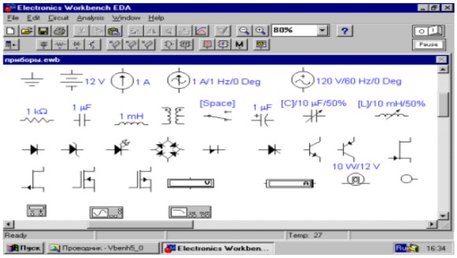
Рис. 1 Обозначения некоторых компонентов
Компоненты контрольно-измерительных приборов представленных на рисунке 1 в окне редактирования, начиная слева сверху, двигаясь направо приведены обозначения следующих компонентов и контрольно-измерительных приборов: заземление, батарея, источник постоянного тока, источник переменного синусоидального тока (эффективное значения тока, частота, фаза), источник переменного синусоидального напряжения (эффективное значение тока, частота, фаза), резистор, конденсатор, катушка (индуктивность), трансформатор, переключатель, электролитический конденсатор, конденсатор переменной емкости, катушка переменной индуктивности, диод, стабилитрон, светодиод, диодный мост, диод Шокли, n – p – n транзистор, p – n –p транзистор, далее 4 вида полевых транзисторов, вольтметр, амперметр, лампа накаливания (напряжение, мощность), светодиод (цвет свечения), мультиметр, осциллограф, измеритель амплитудно-частотных и фазо-частотных характеристик.
Для построения логических схем в библиотеке Logic Gates (логические элементы) предусмотрено возможность выбора логических элементов. На рисунке 1 перечень выбора возможных логических элементов.
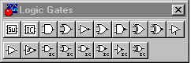
Рис. 1. Панель логических элементов (Logic Gates)
На рисунке 2 показаны обозначения, используемые в Electronics Workbench логических элементов: конъюнкции - И, дизъюнкции – ИЛИ, отрицания –НЕ, 2 – И – НЕ, 2 –ИЛИ – НЕ.
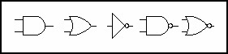
Рис. 2. Графическое обозначение логических элементов
В электронной лаборатории Electronics Workbench имеется виртуальное устройство. Логический конвертор (Logic Converter) позволяет осуществлять 6 логических преобразований для логической функции с числом переменных от 1 до 8: представление таблицы истинности собранной из логических элементов схемы; обращение таблицы истинности в логическую формулу (СДНФ); минимизацию СДНФ; обращение формулы в таблицу истинности; представление формулы в виде схемы в логическом базисе 2-И-НЕ.
Логический конвертор выбирается из меню Instruments (рис. 3) [10].
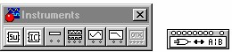
Рис. 3. Панель меню инструмента (Instruments)
Приведем описание технологии исследования логических схем с помощью логического конвертора (преобразователя).
1. Собираем логическую схему.
2. Подключаем исследуемую логическую схему к логическому конвертору(входов 8, выход один – расположен справа).
3. Открываем логический конвертор щелчком левой кнопкой мыши по иконке конвертора. На экране появляется меню Logic Converter (рис. 4).
4. Для получения таблицы истинности нажимаем.
5. Для получения логической функции (структурной формулы) нажимаем
С помощью логического конвертора можно проводить не только анализ логических устройств, но их синтез.
Приведем описание технологии синтеза логического устройства по выходной комбинации с помощью логического конвертора (преобразователя).
1. Раскрываем лицевую панель логического конвертора (рис. 4).
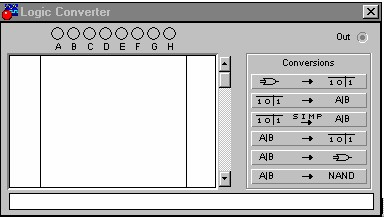
Рис. 4. Панель логического конвектора (Logic Converter)
2. Активизируем курсором клеммы-кнопки A, B, ...H (начиная с F), количество которых равно количеству входов синтезируемого устройства (количеству логических переменных).
3. Вносим необходимые изменения в столбец OUT и после нажатия клавиши на панели преобразователя получаем результат в виде схемы на рабочем поле программы и логическую функцию в дополнительном дисплее.
1.4 Порядок выполнения работы
1) Запустить программу Electronics Workbench.
2) Изучить основные возможности программы.
3) Проведите анализ логического устройства (рис.5) по функциональной схеме с помощью Electronics Workbench.
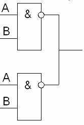
Рис. 5. Функциональная схема логического устройства
На рисунке 6 решение задачи в Electronics Workbench.
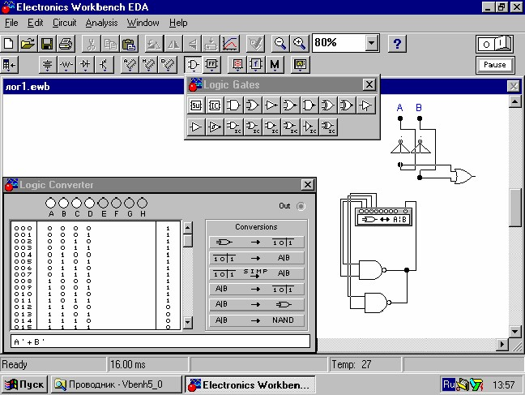
Рис. 6. Схема логического устройства
1.5 Контрольные вопросы
1. Где находятся логические элементы?
2. Что нужно использовать для объединения нескольких проводов?
3. Где находятся индикаторы?
4. Где находятся измерительные приборы?
5. Объяснить назначение и принцип работы логического конвертора.
Решить следующие задания с использованием логического конвертора?
6. Исследуйте логическую схему и постройте функциональную логическую схему: а) B·C'+A·C. б) A·B'·C+A·B'·C'+A'·B'·C. в) A· (B+C) · (D+C)?
7. Провидите синтез логического устройства с выходной комбинацией: а) 00100111. б) 01101001. в) 0110100110010110
8. Исследуйте функциональные схемы, представленные на рисунке а и рисунке б
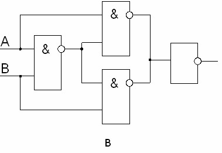
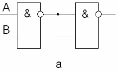
1.6 Рекомендуемая литература
1 Гимор, Ч. Введение в микропроцессорную технику: [пер. с англ.] / И. Гимор. – М.: Мир, 1984г. – 334 с.
2 Угрюмов Ю.П. Цифровая схемотехника. Учебное пособие, издательство БХВ-Петербург, стр.518, 2007г.
3 Шило В.Л. Популярные цифровые микросхемы. Справочник. Стр.352, 1989 г.
4 Максимов, Н.В. Архитектура ЭВМ и вычислительных систем: учеб- ник / Н.В. Максимов, Т.Л. Партыка, И.И. Попов. – М.: ФОРУМ: ИН- ФРА-М, 2005. – 512 с.
5 Цифровая электроника, микропроцессоры и микроЭВМ: учебное по- собие по дисциплине «Электроника» / Сост. В.В. Кангин, М.В. Кангин, В.Н. Меретюк. – Арзамас: Ассоциация ученых, 2004. – 111 с.
Лабораторная работа 2.
ИЗУЧЕНИЕ ЛОГИЧЕСКИХ ЭЛЕМЕНТОВ
2.1 Цель работы
Изучение назначения и принцип работы виртуальных логических элементов. Знакомство с базовыми функциями логического конвертора.
2.2 Материально-техническое обеспечение работы
Аппаратные средства – персональный компьютер:
- процессор 32-/64-разрядный с набором инструкций SSE 2 на тактовой частоте не ниже 1 ГГц;
- ОЗУ 32-/64- разрядное с объемом памяти не менее 1 Gb;
- свободное место на накопителе с объемом памяти не менее 3 Gb.
Программное обеспечение:
- Электронная лаборатория Electronics Workbench.
- операционная система MS Windows ХР, 7, 8,10;
- текстовый редактор Microsoft Word 2003-2016.
2.3 Краткие теоретические сведения
Для решения предложенных выше задач воспользуемся программой электронной лаборатории Electronics Workbench. Для построения логических схем в библиотеке Basic, Diodes, Transistor предусмотрено возможность выбора логических элементов.
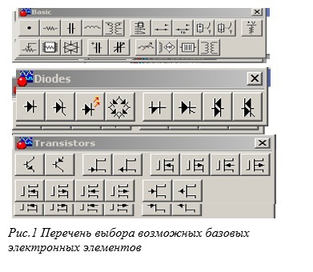
В электронной лаборатории Electronics Workbench имеется виртуальное устройство. Логический конвертор (Logic Converter) и логический осциллограф, которые позволяют осуществлять логические преобразования.
2.4 Порядок выполнения работы
Описание технологии исследования логических схем с помощью логического осциллографа.
1.Собираем логические схемы «НЕ», «И», «ИЛИ», «ИЛИ-НЕ», «И-НЕ».
2. Подключаем исследуемую логическую схему к логическому конвертору (входов 8, выход один – расположен справа).
3. Открываем логический осциллографа щелчком левой кнопкой мыши по иконке осциллографа. На экране появляется меню осциллографа.
4. Зарисуйте результаты при изменении напряжения, проведите анализ, дайте название собранной схемы. Пример приведен на рисунке 3 и 4.

Рис 3 – Пример собранной логической схемы
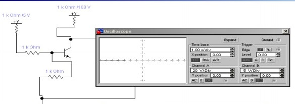
Рис 4 – Пример работы осциллографа
Описание технологии исследования логических схем с помощью логического анализатора.
1. Собираем логические схемы «НЕ», «И», «ИЛИ», «ИЛИ-НЕ», «И-НЕ».
2. Подключаем исследуемую логическую схему к логическому анализатору.
3. Открываем логический анализатор щелчком левой кнопкой мыши по иконке анализатора. На экране появляется меню анализатора.
4. Зарисуйте результаты при изменении напряжения, проведите анализ дайте название собранной схемы. Пример приведен на рисунке 5 и 6.
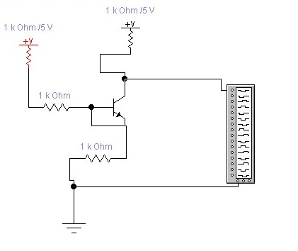
Рис 5 – Пример подключенного логического анализатора
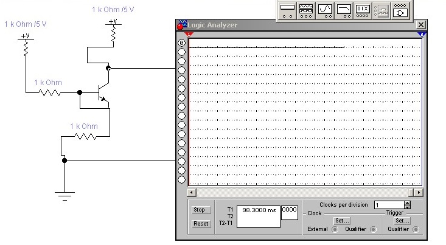
Рис. 6 Пример работы логического анализатора
2.5 Содержание отчета
В отчете следует указать:
1 Цель работы.
2 Введение.
3 Основную часть (описание самой работы), выполненную согласно следующим требованиям:
- таблица должна быть представлена в печатном виде на листах формата А-4 или оформлен в электронном виде документе Microsoft Word.
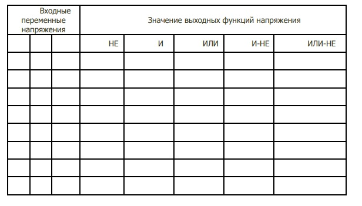
4 Заключение (выводы)
2.6 Контрольные вопросы
1.Каков принцип работы логического элемента «НЕ»?
2.Каков принцип работы логического элемента «И»?
3.Каков принцип работы логического элемента «ИЛИ»?
4. Каков принцип работы логического элемента «И-НЕ»?
5. Каков принцип работы логического элемента «ИЛИ-НЕ»?
6. Где находится инструмент осциллограф?
2.7 Рекомендуемая литература
1 Гимор, Ч. Введение в микропроцессорную технику: [пер. с англ.] / И. Гимор. – М.: Мир, 1984г. – 334 с.
2 Угрюмов Ю.П. Цифровая схемотехника. Учебное пособие, издательство БХВ-Петербург, стр.518, 2007г.
3 Шило В.Л. Популярные цифровые микросхемы. Справочник. Стр.352, 1989 г.
4 Максимов, Н.В. Архитектура ЭВМ и вычислительных систем: учеб- ник / Н.В. Максимов, Т.Л. Партыка, И.И. Попов. – М.: ФОРУМ: ИН- ФРА-М, 2005. – 512 с.
5 Цифровая электроника, микропроцессоры и микроЭВМ: учебное по- собие по дисциплине «Электроника» / Сост. В.В. Кангин, М.В. Кангин, В.Н. Меретюк. – Арзамас: Ассоциация ученых, 2004. – 111 с.
Лабораторная работа 3.
ЛОГИЧЕСКИЕ ЭЛЕМЕНТЫ ЭВМ.
3.1 Цель работы
Применить знания по булевой алгебре для решения задач по теме: Логические схемы.
3.2 Материально-техническое обеспечение работы
Аппаратные средства – персональный компьютер:
- процессор 32-/64-разрядный с набором инструкций SSE 2 на тактовой частоте не ниже 1 ГГц;
- ОЗУ 32-/64- разрядное с объемом памяти не менее 1 Gb;
- свободное место на накопителе с объемом памяти не менее 3 Gb.
Программное обеспечение:
- Электронная лаборатория Electronics Workbench.
- операционная система MS Windows ХР, 7, 8,10;
- текстовый редактор Microsoft Word 2003-2016.
3.3 Краткие теоретические сведения
ФИЗИЧЕСКИЕ ОСНОВЫ ЭВМ ОСНОВНЫЕ ПОНЯТИЯ И ЗАКОНЫ АЛГЕБРЫ ЛОГИКИ
Науку о человеческом мышлении создал древнегреческий ученый Аристотель (384-322 г. до н. э.). Он назвал ее логикой. Логика предписывала общие правила, по которым человек должен мыслить, делать умозаключение и приходить к истине. Немецкий математик, Г.В. Лейбниц(1646-1716 гг.) сблизил логику с вычислениями. У него возникла мысль создать новую науку — математическую логику, в которой логические понятия обозначены математическими знаками. Только почти через 200 лет английский математик, Джордж Буль (1815-1864 гг.) частично реализовал идеи Лейбница. Он создал для логических обоснований и рассуждений необычную алгебру, в которой логические высказывания обозначались особыми символами подобно тому, как в школьной алгебре числа обозначаются буквами. Оказалось что, оперируя этими символами и логическими связками, можно выполнять логические рассуждения при помощи обычных вычислений.
Исследования показали, что в человеческой речи чаще всего встречаются повествовательные предложения, излагающие что-нибудь или описывающие какие-нибудь события. Эти предложения являются высказываниями. В Булевой алгебре высказывания рассматриваются не по содержанию и не по смыслу, а только в отношении того истинно оно или ложно. Принято обозначать: истинно — 1, а ложно — 0. Приведем примеры логических высказываний: «снег холодный». Данное предложение является высказыванием и при том истинным. «Снег теплый» — высказывание, но ложно. «Речка движется и не движется» не является высказыванием, так как из этого предложения нельзя понять истинно оно или ложно. «Который час?» — это не высказывание, а вопросительная фраза. Буль показал, что простейшее высказывание, связанное между собой союзами: «И», «ИЛИ», «НЕ» — составляют составное высказывание, истинность или ложность, которого можно вычислить.
1. Конъюнкция — Λ (логическое умножение), «И».
2. Дизъюнкция — V (логическое сложение), «ИЛИ».
3. Отрицание — ⌐, «НЕ».
4. Логическое исключающее ИЛИ.
5. Импликация.
6. Двойная импликация или эквиваленция.
Обозначения:
· Λ, Χ, ·, &, «и», and — конъюнкция.
· V, +, «или», or — дизъюнкция.
· ⌐, −, not — отрицание.
· - логическое исключающее ИЛИ.
· - импликация.
· — двойная импликация или эквиваленция
Пример решения задачи.
Составление логической функции для функциональной (логической) схемы. При составлении логической функции необходимо проследить пути движения потоков сигналов (рис. 3.1).
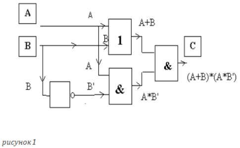
Рис 3.1- Функциональная схема
Ответ: (А+В)*( А*В’).
2. Проверка на избыточность функциональной схемы (упростить логическую функцию, т. е. преобразовать с помощью законов алгебры логики).
(А+В) *(А* В’) =/ Скобки для А*В’ опускаем, так как перед скобками тоже знак * / =(А+В)*А*В’= / Для А*В’ применяем закон коммутативности / =(А+В)*В’*А= / Для (А+В)*В’ применяем закон дистрибутивности/ = ((А*В’)+(В*В’))*А= / В*В’=0/ = ((А*В’)+0)*А=/ Поглощение 0 при дизъюнкции/ =(А*В’)*А=/ Скобки опускаем , применяем закон коммутативности/=А*А*В’=/ А*А=А/=А*В’.
3. Проверяем справедливость логических преобразований. Для этого составляем таблицу истинности. В общем случае составляем две таблицы: для исходной и конечной логических функций. В данной задаче достаточно одной. Значения таблиц истинности А*В’ и (А+В)*(А*В’) равны, что доказывает справедливость логических преобразований.
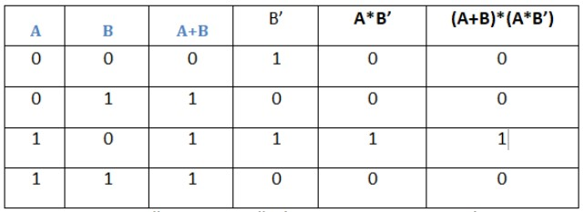
1. По полученной логической функции составляем функциональную схему (рис.3.2).
3.4 Порядок выполнения работы
Проведите анализ логического устройства (рис. 3.2):
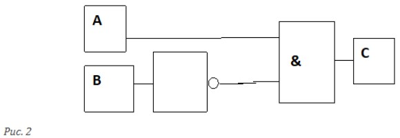
Рис 3.2-Логическое устройство
По функциональной схеме составьте структурную формулу.
Упростите её, если это возможно.
3.5 Содержание отчета
В отчете следует указать:
Цель работы.
Введение.
Основную часть (описание самой работы), выполненную согласно следующим требованиям:
- наличие структурной формулы по цифровому устройству (рис. 3.2).
Заключение (выводы).
3.6 Контрольные вопросы
1 Функция ШЕФФЕРА это?
2 Функция ВЕББА это?
3 СЛОЖЕНИЯ ПО МОДУЛЮ ДВА это?
4 Функция ДИЗЪЮНКЦИИ это?
5 Функция КОНЬЮНКЦИИ это ?
6 Функция РАВНОЗНАЧНОСТИ это?
3.7 Рекомендуемая литература
1 Гимор, Ч. Введение в микропроцессорную технику: [пер. с англ.] / И. Гимор. – М.: Мир, 1984г. – 334 с.
2 Угрюмов Ю.П. Цифровая схемотехника. Учебное пособие, издательство БХВ-Петербург, стр.518, 2007г.
3 Шило В.Л. Популярные цифровые микросхемы. Справочник. Стр.352, 1989 г.
4 Максимов, Н.В. Архитектура ЭВМ и вычислительных систем: учеб- ник / Н.В. Максимов, Т.Л. Партыка, И.И. Попов. – М.: ФОРУМ: ИН- ФРА-М, 2005. – 512 с.
5 Цифровая электроника, микропроцессоры и микроЭВМ: учебное по- собие по дисциплине «Электроника» / Сост. В.В. Кангин, М.В. Кангин, В.Н. Меретюк. – Арзамас: Ассоциация ученых, 2004. – 111 с.
Лабораторная работа 4.
ТРИГГЕРЫ.
4.1 Цель работы
Изучить структуру триггеров различных типов и алгоритмы их работы.
4.2 Материально-техническое обеспечение работы
Аппаратные средства – персональный компьютер:
- процессор 32-/64-разрядный с набором инструкций SSE 2 на тактовой частоте не ниже 1 ГГц;
- ОЗУ 32-/64- разрядное с объемом памяти не менее 1 Gb;
- свободное место на накопителе с объемом памяти не менее 3 Gb.
Программное обеспечение:
- Электронная лаборатория Electronics Workbench.
- операционная система MS Windows ХР, 7, 8,10;
- текстовый редактор Microsoft Word 2003-2016.
4.3 Краткие теоретические сведения
Триггер это электронная схема с двумя устойчивыми состояниями.
Схемы триггеров, выполненных на логических элементах, обладают рядом свойств.
Высокое быстродействие, обеспечиваемое положительной обратной связью между схемами.
Высокая помехоустойчивость т.е когда случайные всплески напряжения на входах триггера не переводят его из одного состояния в другое. Как схема, имеющая два устойчивых состояния, триггер используется для представления двоичных символов в ЭВМ.
Триггер в любом из разрешенных состояний может находиться сколь угодно долго.
Последовательное во времени преобразование двоичной информации требует организации хранения исходных данных, промежуточных и окончательных результатов на запоминающих элементах. Временное хранение данных необходимо для ожидания разновременно поступающих аргументов, для многократной передачи данных в разные устройства.
У элементов для запоминания двоичной информации должно быть три режима работы: запись, хранение и выдача информации.
В режиме хранения запоминающие элементы находятся в одном из двух состояний: нулевом или единичном. В режиме записи возможна запись «0» или «1». Для установки состояний предусматривается два входа: S-вход для установки в «1» и R-вход для в «0». В режиме хранения входные воздействия должны быть заблокированы. Режим выдачи обычно не организован. Как правило, запоминающие элементы имеют два постоянно действующих выхода: нулевой (Q-выход), фиксирующий нулевое состояние и единичный (Q-выход) фиксирующий единичное состояние. Выходы элемента взаимно инвестны. Уровни напряжений с выходов Q и Q непосредственно передаются в другие устройства, в которых организуется прием этих уровней.
Если же запоминающие элементы не предназначены для подключения к интерфейсным линиям связи шинного типа, то специальных выходных логических схем они не содержат.
По способу записи информации триггеры делятся на:
- Асинхронные
- Синхронные
Синхронный имеет специальный вход синхронизации «С». Сигнал по этому входу разрешает поступление в схему триггера очередной информации, воздействуя на триггер либо с помощью определенного уровня напряжения (схема с управлением уровня потенциала), либо с помощью перепада напряжения (схема с динамическим управлением записью).
Асинхронный SR –триггер
Основу же запоминающих элементов составляет асинхронный триггер с двумя выходами Q и Q и двумя установочными входами. Такой триггер называется симметричным, поскольку структурно состоит из двух одинаковых микросхем ИЛИ-НЕ или И-НЕ, охваченные взаимообратными связями; любой из входов, кроме того, может быть назначен и определен в качестве нулевого или единичного.
Управляемый SR-триггер
Сигналы на С – входах определяют момент переключения триггера по переднему фронту синхросигнала, и на условных изображениях триггера (На условных изображениях триггера это отражается стрелкой на С-входе).
D-триггер
При переходе логического уровня на входе с «О» на «1» происходит запись информации в триггер, и он устанавливается в положение, соответствующее логическому уровню на входе D.
JK-триггер
Триггеры этого типа отличаются от SR-триггера тем, что при значениях входной информации, запрещенной для SR-триггеров, они инвестируют хранящуюся в них информацию за счет обратной «штатной» связи.
4.4 Порядок выполнения работы
1. Триггеры на логических элементах.
1.1. Асинхронный R-S триггер с инверсными входами.
Соберите схему триггера на логических элементах, представленную на рисунке 4.1 и проверьте таблицу его состояний.
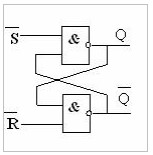
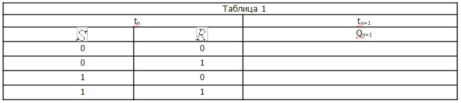
1.2. Тактируемый (синхронный) RS триггер Соберите схему триггера на логических элементах, представленную на рисунке 4.2 и проверьте таблицу его состояний.
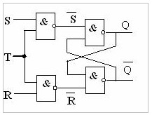
Рис 4.2 - Синхронный RS триггер Триггер
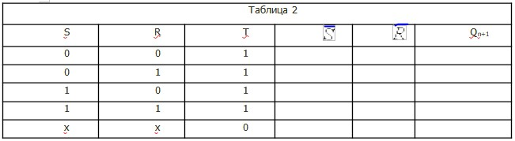
1.3. D-триггер
Соберите схему триггера на логических элементах представленный на рисунке 4.3 и проверьте таблицу его состояний.
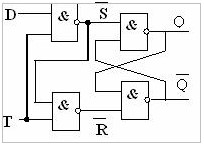
Рис 4.2 – D-Триггер
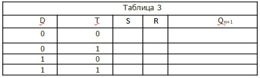
1.4. Задача: для R-S триггера с инверсными входами даны переменные входные параметры X и Y, изменение которых во времени показано на рис.4.4. По номеру своего варианта выбрать вид входных сигналов из таблицы 4:
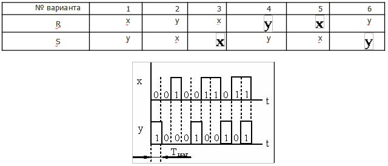
Рис 4.4
Соберите схему R-S триггера с инверсными входами, подав на входы R и S коды с генератора слова, а на логический анализатор - входы R, S и выходы Q, Q (инверсный). Коды генератора слова следует задавать так: биты S и R соответствуют битам D0 и D1, остальные биты D2…D15 равны 0. Выбрав по номеру варианта последовательность битов R и S для каждого Тшаг, следует записать слово в шестнадцатеричном коде. Таким образом, в генератор слова вводится 10 слов (Tшаг=10).
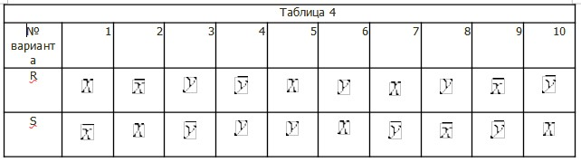
Например, в первом шаге R=0, S=1, следовательно в двоичном коде: 0000.0000.0000.0001 или в шестнадцатеричном 0001 – первый код генератора слова. Во втором шаге R=1, S=0: 0000.0000.0000.00102 = 000216 – второй код генератора слова и т.д.
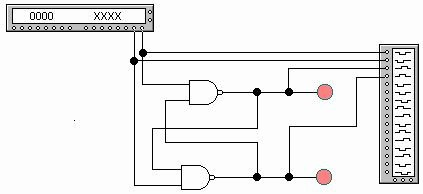
2. Интегральные триггеры.
2.1. D-триггер 74175 (триггер-защелка).
Выберите из библиотекиDigital интегральную схему D-триггера 74175 (Quad D-type FF (clr)) Выберите из библиотеки Digital интегральную схему D-триггера 74175 (Quad D-type FF (clr)) . Данная интегральная схема содержит четыре двухступенчатых Д-триггера. На выходы 1Q, 2Q, 3Q и 4Q поступает информация с входов 1D, 2D, 3D, и 4D при значении стробсигнала CLK=1 информация “защелкивается”. Сигнал CLR’=0 сбрасывает триггер в исходное состояние. Питание микросхемы: 8 (GND) – общий провод, 16 (VCC)- Uпит.
Задание:
Исследуйте поведение триггера, воспользовавшись одним из входов Di и соответствующим выходом Qi . В какой момент происходит защелкивание информации? Нарисуйте схему подключения ИС 74175 для записи на выходах ее кода Q4Q3Q2Q1=0011. Соберите схему и зафиксируйте на выходах заданный код.
2.2. JK-триггер 7472. Выберите из библиотеки Digital интегральную схему JK-триггера 7472 (AND-gated JK MS-SLV FF (pre, clr)). Данная интегральная схема содержит: входы - J1, J2, J3, К1, К2, К3; выходы – Q и Q’, а также стробсигнал CLK, сброс – CLR’ и вход предустановки PRE’. Питание микросхемы: 7 – общий провод, 14 - Uпит.
Ознакомьтесь с работой JK-триггера. Запишите таблицу состояний триггера. Какие строчки таблицы соответствуют работе JK-триггера в качестве RS-триггера и Т-триггера?
Задание: Соберите схему включения триггера 7472. На выходы Q, Q(инверс.) подключите светодиоды. Проверьте все варианты таблицы состояний. Соберите схему D-триггера на JK триггере и проверьте ее работу. В качестве инвертора воспользуйтесь соответствующим логическим элементом.
4.5 Содержание отчета.
В отчете следует указать:
1.Цель работы.
2.Программно-аппаратные средства, используемые при выполнении работы.
3.Основную часть (описание самой работы), выполненную согласно следующих требований:
- результаты п. 1.1, 1.2, 1.3, 1.4.
- схема и результаты п. 2.1.1.
- таблица п. 2.2.1 и пояснения к ней.
4.Заключение (выводы).
4.6 Контрольные вопросы
1.Какой принцип работы D-триггера?
2.Что общего у JK-триггера и T-триггера?
3.Что такое двухступенчатый триггер?
4.Чем отличается асинхронный RS-триггер от тактируемого (синхронного) RS триггера?
5. Чем отличается динамический D-триггер от статического?
6.Что означает синхронизация данных по переднему или заднему фронту синхроимпульса
4.7 Рекомендуемая литература
1 Гимор, Ч. Введение в микропроцессорную технику: [пер. с англ.] / И. Гимор. – М.: Мир, 1984г. – 334 с.
2 Угрюмов Ю.П. Цифровая схемотехника. Учебное пособие, издательство БХВ-Петербург, стр.518, 2007г.
3 Шило В.Л. Популярные цифровые микросхемы. Справочник. Стр.352, 1989 г.
4 Максимов, Н.В. Архитектура ЭВМ и вычислительных систем: учеб- ник / Н.В. Максимов, Т.Л. Партыка, И.И. Попов. – М.: ФОРУМ: ИН- ФРА-М, 2005. – 512 с.
5 Цифровая электроника, микропроцессоры и микроЭВМ: учебное по- собие по дисциплине «Электроника» / Сост. В.В. Кангин, М.В. Кангин, В.Н. Меретюк. – Арзамас: Ассоциация ученых, 2004. – 111 с.
5.1 Цель работы
Изучить регистры различных видов и принцип их работы.
5.2 Материально-техническое обеспечение работы
Аппаратные средства – персональный компьютер:
- процессор 32-/64-разрядный с набором инструкций SSE 2 на тактовой частоте не ниже 1 ГГц;
- ОЗУ 32-/64- разрядное с объемом памяти не менее 1 Gb;
- свободное место на накопителе с объемом памяти не менее 3 Gb.
Программное обеспечение:
- Электронная лаборатория Electronics Workbench.
- операционная система MS Windows ХР, 7, 8,10;
- текстовый редактор Microsoft Word 2003-2016.
4.3 Краткие теоретические сведения
5.3 Краткие теоретические сведения
Регистрами называют цифровые узлы, функцией которого является фиксация многоразрядного двоичного кода и (возможно) выполнение некоторых преобразований над этим кодом.
Элементами структуры регистра являются триггеры. Кроме того, регистр может содержать вспомогательные схемы, которые обеспечивают выполнение следующих операций:
- сброс регистра (установка в 0);
- запись в регистр двоичного кода;
- чтение из регистра зафиксированного в нем кода;
- сдвиг содержимого регистра на заданное число разрядов влево (в сторону старших разрядов) или вправо (в сторону младших разрядов);
- преобразование последовательного кода в параллельный или параллельного в последовательный и др.
Все регистры по их функциональным свойствам можно разделить на две категории: регистры памяти (аккумуляторы, накопители) и сдвигающие регистры.
Регистр памяти
Функция – прием и хранение двоичного кода.
Принцип построения иллюстрируется рисунком 5.1. Такой регистр представляет собой линейку из триггеров, например D-типа, входы синхронизации которых объединены.
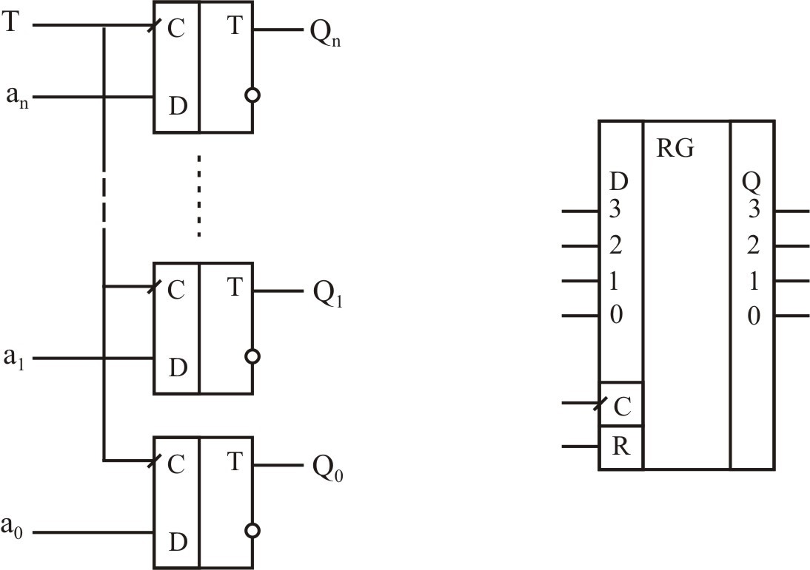
Рис.5.1. Регистр памяти
Кроме отмеченных на условном обозначении регистра входных и выходных линий регистра памяти в интегральных регистрах памяти имеются дополнительные входы, управляющие подключением триггеров регистра к входным и выходным линиям.
Регистр сдвига
Регистр сдвига – это регистр, содержимое которого с каждым импульсом синхронизации сдвигается на один разряд (влево или вправо). Регистры сдвига различают по следующим признакам:
- по направлению сдвига информации на однонаправленные (или только вправо или только влево) и реверсивные;
- по способу ввода и вывода информации на последовательные, параллельные и комбинированные.
На рис.5.2 показана схема простейшего регистра сдвига с последовательным вводом данных по входу DS. Вывод – параллельный по выходам Q0, Q1, Q2, Q3 или последовательный по выходу QS.
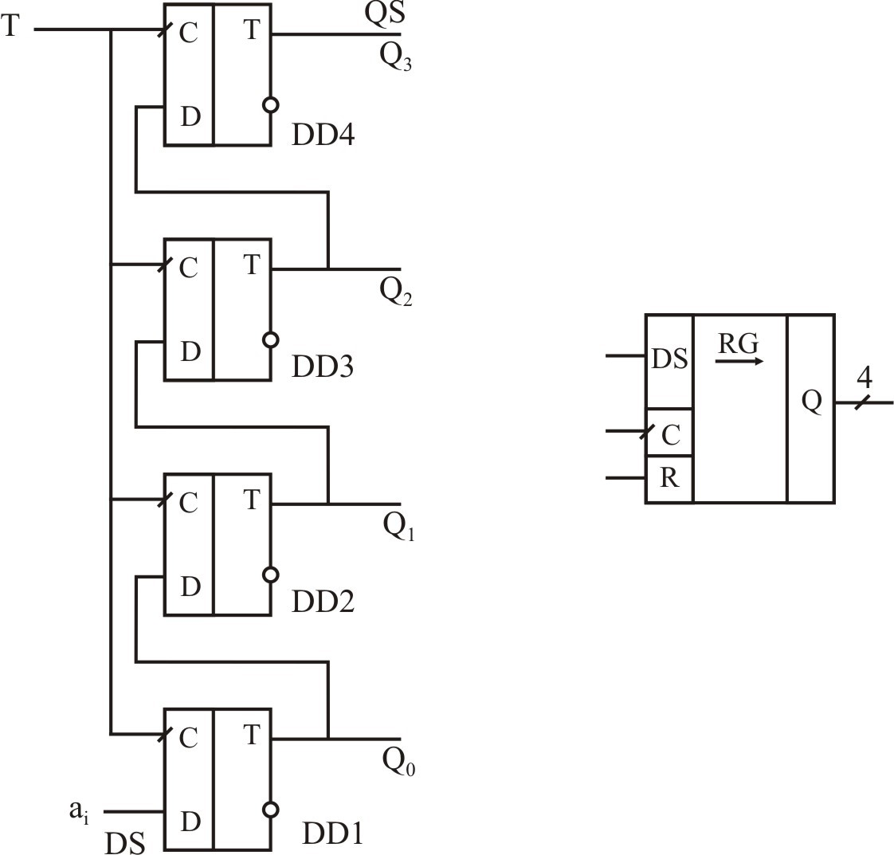
Рис.5.2. Регистр сдвига
Предположим, что в этот регистр нужно записать код а3а2а1а0. Для этого на вход DS подается а3. Импульсом синхронизации Т это значение будет зафиксировано в триггере DD1. Далее на вход DS подается а2. Очередным импульсом синхронизации а3 переписывается в триггер DD2, а в DD1 записывается а2. Таким образом, за четыре такта код а3а2а1а0 фиксируется в регистре и выставляется на выходы Q3, Q2, Q1, Q0. Тем самым последовательный код преобразован в параллельный. Каждый последующий синхроимпульс сдвигает содержимое регистра на один разряд. Разряды, начиная со старшего последовательно выводятся через выход QS.
Реверсивные сдвигающие регистры допускают управление направлением сдвига их содержимого. Принцип построения такого регистра поясняет рис.5.3.
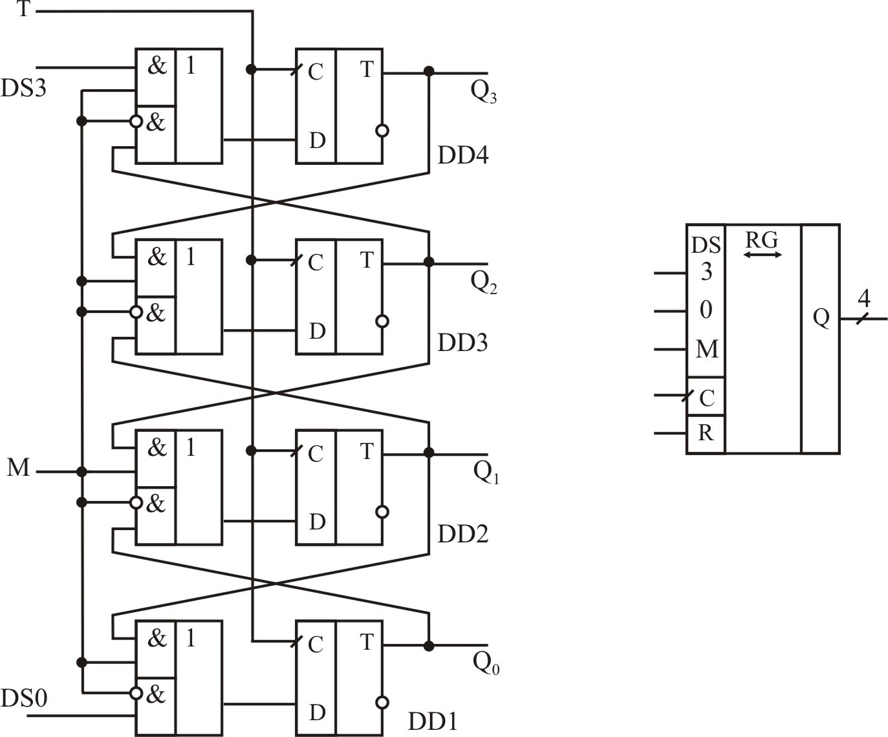
Рис.5.3. Реверсивный регистр сдвига
Сигналом М=0 задается направление сдвига влево (от младших разрядов к старшим). При этом мультиплексоры подключают к D-входам триггеры младших разрядов, а последовательный код вводится через вход DS0.
При М=1 к D-входам подключаются выходы триггеров старших разрядов и сдвиг производится вправо (от старших разрядов к младшим). Последовательный код при этом вводится через вход DS3.
5.4 Порядок выполнения работы
2.1.1. Запустите программу ElectronicsWorkbench.
2.1.2. Соберите схему регистра памяти аналогично рис. 5.6
Используйте в регистре D-триггеры с асинхронными входами установки и сброса. Выбор триггера показан на рис..5.4, назначение выводов – на рис.5.5. Сброс и установка триггера осуществляется подачей нулевого уровня на входы ¯(" ) и ¯(" ) соответственно. Запись информации – по положительному фронту тактового сигнала.
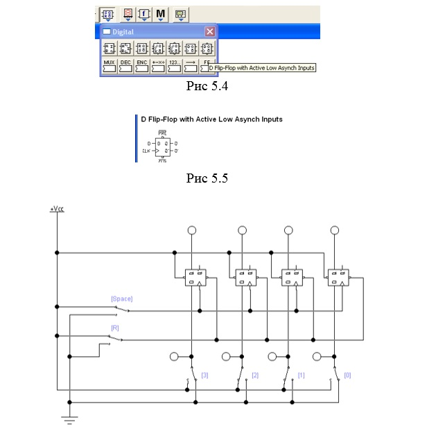
Рис.5.6 Схема регистра памяти
2.1.3. Установите на входе регистра код, согласно заданного варианта (табл.1).
Таблица 5.1
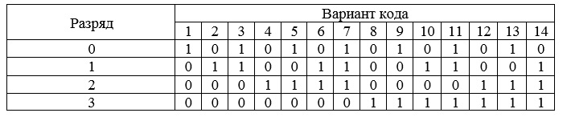
2.1.4 Запишите входной код в регистр памяти, дважды нажав клавишу [Space]. Убедитесь, что на выходе регистра код совпадает с исходным на входе.
2.1.5. Сбросьте регистр, дважды нажав [R].
2.1.6. Поместите в отчет скриншоты регистра в исходном состоянии и с записанной информацией.
2.2. Исследование регистра сдвига
2.2.1. Соберите схему, приведенную на рис.5.7.
Выбор триггеров аналогичен п.2.1.2 настоящей работы.
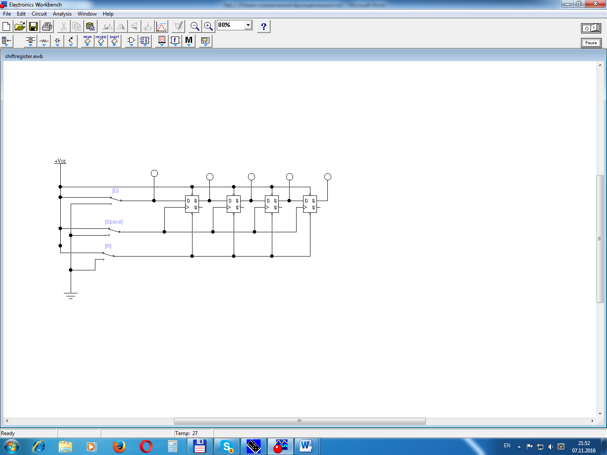
Рис.5.7. Схема регистра сдвига
2.2.2. Установите переключателем [D] на входе логическую единицу. Нажимая клавишу [Space], подавайте на регистр тактовые импульсы и наблюдайте постепенное заполнение регистра единицами. После полного заполнения, переведите переключатель [D] в нулевое положение и, продолжая нажимать [Space], проследите вытеснение в регистре единиц нулями.
2.2.3. Поместите в отчет скриншоты полностью заполненного регистра и регистра, заполненного наполовину.
2.3. Преобразование последовательного кода в параллельный.
2.3.1. В качестве источника последовательного кода используем схему на мультиплексоре, созданную при выполнении п.2.3 лабораторной работы №2. Доработаем ее так, как это показано на рис.5.8. Для удобства наблюдения процессов, генератор слов заменен счетчиком DD2, на который вручную подается тактовый сигнал. Выбор счетчика показан на рис.5.9.
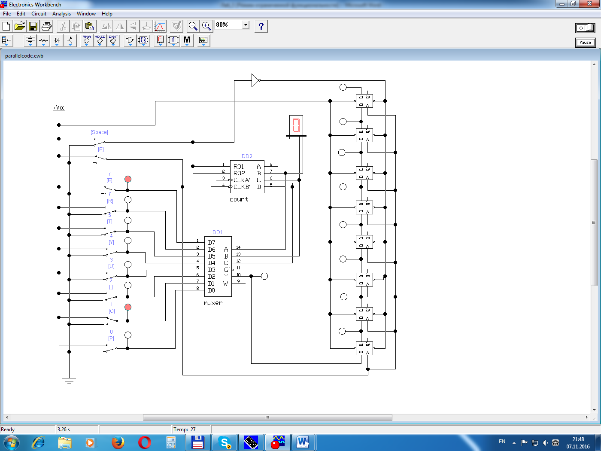
Рис.5.8 Схема для преобразования последовательного кода в параллельный
Выбранная микросхема содержит отдельный триггер с входом CLKA', выходом A и входом сброса R01 а также трехразрядный двоичный счетчик с входом CLKB' выходами B, C, D и входом сброса R02.
Используем в работе вторую часть микросхемы.
Тактовый сигнал счетчика используется также в качестве тактового сигнала регистра сдвига.
Номер рабочего такта счетчика выводится на цифровой индикатор.
Поскольку состояние счетчика меняется по отрицательному фронту тактового сигнала, а регистра сдвига – по положительному, процессы в генераторе последовательного кода и регистра сдвига сдвинуты относительно друг друга на половину периода тактового сигнала.
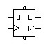
Рис.5.9. Выбор счетчика
Синхронизация работы генератора последовательного и преобразователя последовательного кода в параллельный (регистра сдвига) осуществляется одновременным сбросом счетчика и регистра (переключатель [Space]).
2.3.2. Установите на входах мультиплексора код вашего варианта (табл.5.2).
Таблица 5.2. Варианты кодов
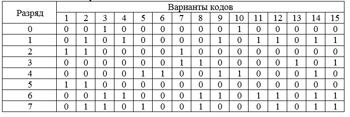
2.3.3. Сбросьте счетчик и регистр. На индикаторе должен быть номер "0".
Поместите в отчет скриншот исходного состояния схемы.
2.3.4. Нажимая клавишу [B], подайте тактовый сигнал на схему (один период = два нажатия на клавишу). Наблюдайте процесс генерации последовательного кода по индикатору на выходе мультиплексора и формирование параллельного кода в регистре по выходным индикаторам. Поместите в отчет два скриншота в произвольные моменты времени (такты).
2.3.5. Когда индикатор вернется в нулевое состояние, на выходе регистра должен сформироваться код, равный исходному. Если это не так, найдите и исправьте ошибку в схеме. Занесите в отчет скриншот конечного состояния системы.
5.5 Содержание отчета
В отчете следует указать:
Цель работы.
Программно-аппаратные средства, используемые при выполнении работы.
Основную часть (описание самой работы), выполненную согласно следующих требований:
- заголовок работы;
- фамилии и инициалы исполнителя;
- исходные данные (согласно варианту);
- результаты расчетов;
- скриншоты схемы и полученных результатов с необходимыми пояснениями.
4. Заключение (выводы).
5.6 Контрольные вопросы
1. Что такое регистр?
2. Что такое регистр сдвига?
3. Что такое регистр памяти?
4. Что такое реверсивные сдвигающие регистры?
5. В чем принцип параллельного регистра сдвига?
6. В чем принцип комбинированного регистра сдвига?
5.7 Рекомендуемая литература
1 Гимор, Ч. Введение в микропроцессорную технику: [пер. с англ.] / И. Гимор. – М.: Мир, 1984г. – 334 с.
2 Угрюмов Ю.П. Цифровая схемотехника. Учебное пособие, издательство БХВ-Петербург, стр.518, 2007г.
3 Шило В.Л. Популярные цифровые микросхемы. Справочник. Стр.352, 1989 г.
4 Максимов, Н.В. Архитектура ЭВМ и вычислительных систем: учеб- ник / Н.В. Максимов, Т.Л. Партыка, И.И. Попов. – М.: ФОРУМ: ИН- ФРА-М, 2005. – 512 с.
5 Цифровая электроника, микропроцессоры и микроЭВМ: учебное по- собие по дисциплине «Электроника» / Сост. В.В. Кангин, М.В. Кангин, В.Н. Меретюк. – Арзамас: Ассоциация ученых, 2004. – 111 с.
Лабораторная работа 6.
СЧЕТЧИКИ И ДЕЛИТЕЛИ ЧАСТОТЫ.
6.1 Цель работы
Исследовать счетчики и делители частоты, и принципы их работы
6.2 Материально-техническое обеспечение работы
Аппаратные средства – персональный компьютер:
- процессор 32-/64-разрядный с набором инструкций SSE 2 на тактовой частоте не ниже 1 ГГц;
- ОЗУ 32-/64- разрядное с объемом памяти не менее 1 Gb;
- свободное место на накопителе с объемом памяти не менее 3 Gb.
Программное обеспечение:
- Электронная лаборатория Electronics Workbench.
- операционная система MS Windows ХР, 7, 8,10;
- текстовый редактор Microsoft Word 2003-2016.
6.3 Краткие теоретические сведения
Как было установлено ранее, двоичный счетчик одновременно служит делителем частоты. Частота на выходе первого каскада равна половине частоты входного сигнала. На выходе второго каскада она составляет четверть, на выходе третьего –одну восьмую и т.д.
Чтобы получить делитель с коэффициентом, отличающимся от степеней числа 2, необходимо реализовать счетчик с произвольным коэффициентом пересчета.
Одним из наиболее известных счетчиков такого рода является двоично-десятичный счетчик (декада).
Поскольку десятичные числа в естественном двоично-десятичном счислении отображаются посредством 4-разрядных двоичных слов, составленных из разрядов 23, 22, 21 и 20, такое двоично-десятичное представление называют также кодом 8421. В табл. 1 демонстрируются показания десятичной декады в этом коде; они должны совпадать с таблицей двоичного счетчика вплоть до числа 9, потому что 10 вновь представляется как 0000. Соответствующие временные диаграммы выходных переменных показаны на рис. 6.1.
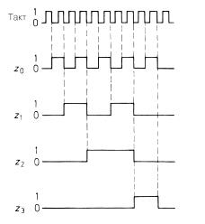
Рис.6.1. Временные диаграммы выходных состояний двоично-десятичного счетчика
Таблица 1. Таблица состояний двоично-десятичного счетчика
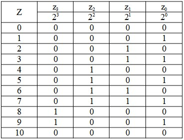
Разумеется, для того чтобы после десятого входного импульса принудительно вернуть счетчик в начальное состояние, требуется дополнительная логика, включенная так, как это показано на рис 6.2.
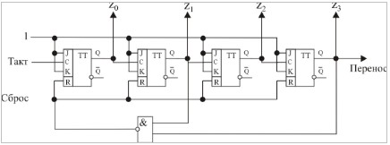
Рис.6.2. Двоично-десятичный счетчик
В каждом из состояний Z=(0,…,9) триггеры переключаются как в обычном двоичном счетчике. При Z=10 на выходе вентиля И-НЕ формируется нулевое значение, которым счетчик сбрасывается в нулевое состояние. Длительность пребывания счетчика в состоянии Z=1 составляет t_"\с\б\р" =τ_"DD" +τ_R, где τ_"DD" - задержка при срабатывании вентиля, τ_R - время сброса счетчика. Считается, что потребитель результатов не успевает среагировать на показание Z=10. Однако это справедливо только для случаев, когда время сброса много меньше периода тактовых импульсов.
Порядок выполнения работы
1. Соберите модель двоично-десятичного счетчика как это показано на рис.6.3.
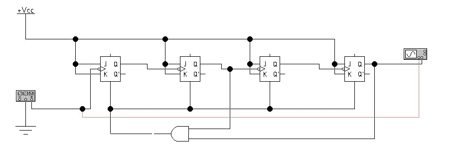
Рис.6.3. Реализация двоично-десятичного счетчика
Настроив приборы, как показано на рис.6.4, убедитесь, что на выходе счетчика частота сигнала в 10 раз меньше частоты входного сигнала. Для этого достаточно сосчитать количество периодов входного сигнала, укладывающихся в одном периоде выходного сигнала счетчика. Удобно также воспользоваться измерительными маркерами осциллографа (аналогично лабораторной работе №3).
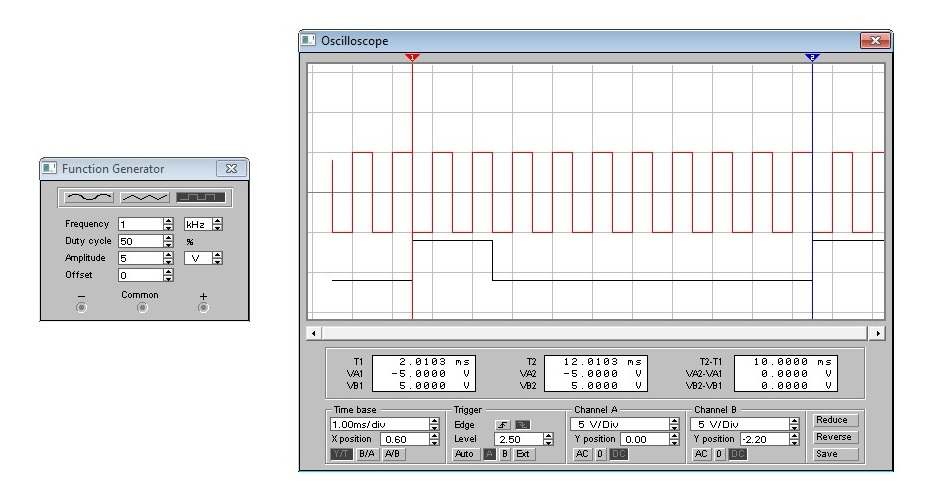
Рис.6.4. Настройка измерительных приборов
2. Самостоятельно разработайте схему делителя частоты согласно заданному варианту (табл.6.2).
Таблица 6.2
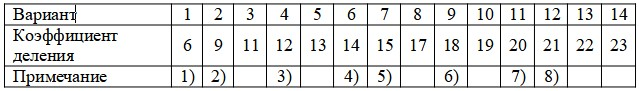
Примечания.
Указанные делители реализовать в виде двух последовательно включенных счетчиков:
1) 3+2;
2) 3+3;
3) 3+4;
4) 7+2;
5) 5+3;
6) 9+2;
7) 5+4;
8) 7+3.
3. Соберите схему разработанного делителя частоты и убедитесь в его правильной работе.
6.5 Содержание отчета
В отчете следует указать:
1. Цель работы.
2. Программно-аппаратные средства, используемые при выполнении работы.
3. Основную часть (описание самой работы), выполненную согласно следующих требований:
- заголовок работы;
- фамилии и инициалы исполнителя;
- исходные данные (согласно варианту);
- результаты расчетов;
- скриншоты схемы и полученных результатов с необходимыми пояснениями.
4. Заключение (выводы).
6.6 Контрольные вопросы
1. Что такое делитель частоты?
2. Каков может быть коэффициент деления?
3. Что такое декада?
4. Что такое двоично-десятичный счетчик?
5. Чем архитекрно отличается суммирующий счетчик от вычитающего
6. Что такое реверсивный счетчик?
6.7 Рекомендуемая литература
1 Гимор, Ч. Введение в микропроцессорную технику: [пер. с англ.] / И. Гимор. – М.: Мир, 1984г. – 334 с.
2 Угрюмов Ю.П. Цифровая схемотехника. Учебное пособие, издательство БХВ-Петербург, стр.518, 2007г.
3 Шило В.Л. Популярные цифровые микросхемы. Справочник. Стр.352, 1989 г.
4 Максимов, Н.В. Архитектура ЭВМ и вычислительных систем: учеб- ник / Н.В. Максимов, Т.Л. Партыка, И.И. Попов. – М.: ФОРУМ: ИН- ФРА-М, 2005. – 512 с.
5 Цифровая электроника, микропроцессоры и микроЭВМ: учебное по- собие по дисциплине «Электроника» / Сост. В.В. Кангин, М.В. Кангин, В.Н. Меретюк. – Арзамас: Ассоциация ученых, 2004. – 111 с.
Лабораторная работа 7.
ИССЛЕДОВАНИЕ ДВОИЧНЫХ СЧЕТЧИКОВ.
7.1 Цель работы
Исследовать двоичные счетчики и принцип их работы.
7.2 Материально-техническое обеспечение работы
Аппаратные средства – персональный компьютер:
- процессор 32-/64-разрядный с набором инструкций SSE 2 на тактовой частоте не ниже 1 ГГц;
- ОЗУ 32-/64- разрядное с объемом памяти не менее 1 Gb;
- свободное место на накопителе с объемом памяти не менее 3 Gb.
Программное обеспечение:
- Электронная лаборатория Electronics Workbench.
- операционная система MS Windows ХР, 7, 8,10;
- текстовый редактор Microsoft Word 2003-2016.
7.3 Краткие теоретические сведения
Двоичные счетчики
Счетчики составляют важную группу цифровых схем. Функция счетчика состоит в подсчете числа импульсов, поступивших на его вход. Признаки классификации счетчиков: по коэффициенту пересчета, по направлению счета, по способу управления счетом.
По коэффициенту пересчета различают:
- двоичные счетчики, у которых K=2^n;
- счетчики с произвольным коэффициентом пересчета K≠2^n,K="const" ;
- счетчики с переменным коэффициентом пересчета K="var".
По направлению счета различают:
- суммирующие счетчики;
- вычитающие счетчики;
- реверсивные счетчики.
По способу управления счетом различают:
- асинхронные счетчики, у которых смена состояния происходит только под воздействием счетных импульсов;
- синхронные счетчики, для работы которых нужны еще специальные хронирующие сигналы.
Признаки классификации независимы и могут встречаться в любых сочетаниях.
1. Асинхронный (последовательный) счетчик
1.1. Общие сведения
Асинхронный двоичный счетчик реализуется в виде последовательной цепочки триггеров, тактовый вход каждого из которых соединен с выходом Q предыдущего триггера (рис. 7.1).
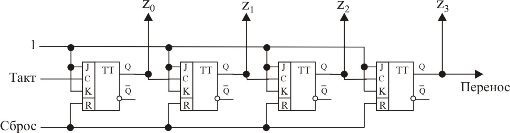
Рис.7.1. Асинхронный (последовательный счетчик)
Последовательность состояний простейшего двоичного суммирующего счетчика представлена в табл.7.1.
Таблица 7.1. Таблица состояний двоичного счетчика
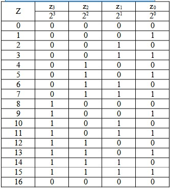
Чтобы счетчик работал в прямом направлении, выходы триггеров должны изменять свое состояние, когда состояние тактового импульса меняется от 1 до 0. Следовательно, здесь требуются триггеры с запуском по отрицательному фронту тактового импульса, например JK-триггер типа ведущий–ведомый при J = K = 1. Счетчик допускает произвольное наращивание. Так цепочка из 10 триггеров позволит подсчитать до 1023 событий.
Любой счетчик одновременно служит делителем частоты. Частота на выходе триггера z0 равна половине частоты входного сигнала. На выходе триггера z1 она составляет четверть, на выходе триггера z2 –одну восьмую и т.д.
7.4 Порядок выполнения работы
1.1 Запустите программу Electronics Workbench.
1.2 Соберите схему, показанную на рис.7.2.
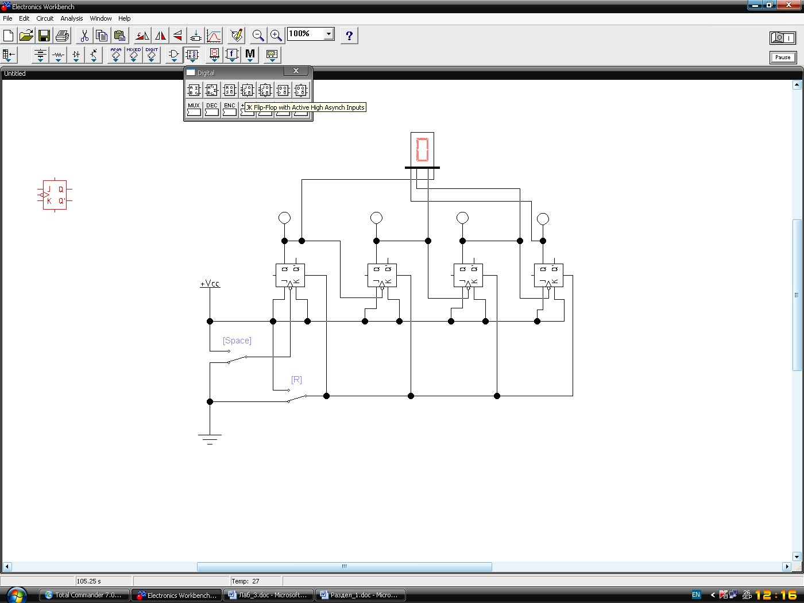
Рис.7.2. Схема для исследования асинхронного счетчика
Выбор триггера для построения счетчика показан на рис.7.3.
Рис.7.3. Выбор триггера
Назначение выводов данного триггера показано на рис.7.4.
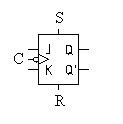
Рис.7.4. Назначение выводов JK-триггера.
1.3 Проверьте работоспособность схемы, установив переключатель  в положение «1». Периодически нажимая клавишу "Пробел", подайте входные импульсы на счетчик (два нажатия эквивалентны одному периоду входной последовательности). Если в начале эксперимента не все триггеры находятся в нулевом состоянии, дважды нажмите клавишу R, соответствующую ключу сброса. При правильной работе на цифровом индикаторе должны последовательно появляться цифры от 0 до 15 (в шестнадцатеричной системе), а на световых индикаторах – соответствующий двоичный код. Занесите все показания в таблицу и сравните ее с табл.1. При расхождении данных необходимо найти неисправность и устранить ее.
в положение «1». Периодически нажимая клавишу "Пробел", подайте входные импульсы на счетчик (два нажатия эквивалентны одному периоду входной последовательности). Если в начале эксперимента не все триггеры находятся в нулевом состоянии, дважды нажмите клавишу R, соответствующую ключу сброса. При правильной работе на цифровом индикаторе должны последовательно появляться цифры от 0 до 15 (в шестнадцатеричной системе), а на световых индикаторах – соответствующий двоичный код. Занесите все показания в таблицу и сравните ее с табл.1. При расхождении данных необходимо найти неисправность и устранить ее.
Сохраните созданную схему для использования в дальнейшем.
1.4 Исследуйте работу счетчика в режиме деления частоты. Для этого подключите к схеме генератор сигналов и осциллограф, как это показано на рис. 7.5.
Поочередно подключая вход В осциллографа к выходам всех триггеров счетчика, убедитесь, что каждая последующая ступень уменьшает частоту сигнала в два раза. Поместите все полученные осциллограммы в отчет.

Рис.7.5. Исследование счетчика в режиме деления частоты
1.5 Исследуйте динамические свойства счетчика:
- подключите вход В осциллографа к выходу четвертого разряда счетчика;
- установите частоту входного сигнала 20 МГц;
- измерьте при помощи маркеров осциллографа задержку между отрицательным фронтом синхросигнала и моментом установления высокого уровня на выходе счетчика. Для этого переместите мышкой красный и синий маркеры в те точки осциллограммы, временной отрезок между которыми требуется измерить (рис.7.6).

Рис.7.6. Измерение временной задержки
Значение временного сдвига считывается из правого окна измерения параметров (Т2-Т1);
- аналогичным образом измерьте задержки на выходах 3, 2 и 1 разрядов счетчика;
- занесите данные в отчет.
2. Синхронный двоичный счетчик
Общие сведения
Отличительная особенность асинхронного счетчика состоит в том, что счетные импульсы подаются только на тактовый вход первого триггера, тогда как остальные триггеры управляются косвенно. В результате выходной сигнал приходит на оконечный триггер лишь после переключения всех предшествующих триггеров, так что выходные состояния от z0 до zn меняются с взаимным запаздыванием на время переключения одного триггера. В результате при длинной цепочке zn меняется только после появления нового счетного импульса, и после ожидания длительностью, равной суммарной задержке сигнала всей цепочкой.
Указанного недостатка нет у синхронных счетчиков. Их отличительная черта – подача счетных импульсов одновременно на все тактовые входы С. Чтобы предотвратить срабатывание всех триггеров от каждого тактового импульса, применяются управляемые триггеры, например, JK-триггеры. Они переключаются, когда управляющая переменная Т = J = K = 1.
В соответствии с табл. 1.15 условие переключения формулируется следующим образом: триггер двоичного счетчика должен переключиться, только когда управляющая переменная всех более низких по рангу триггеров равна единице. Для этого необходимо, чтобы выполнялись равенства T0 = 1, T1 = z0, T2 = z0z1 и T3 = z0z1z2. На рис. 7.7 показано, как реализуется требуемая здесь логическая функция И.

Рис.7.7. Синхронный двоичный счетчик со сквозным переносом
Интегральные синхронные счетчики располагают дополнительными входами и выходами. Вход сигнала установки нуля CLR позволяет сбросить результат счета (Z = 0). Загрузочный вход LOAD дает возможность загрузить в счетчик любое число Z = D.
Задание на работу.
2.1 Соберите схему в соответствии с рис.7. Входные, выходные цепи и цепи сброса аналогичны цепям асинхронного счетчика.
2.2 Проведите исследования схемы аналогично п.п. 1.2.2 … 1.2.4 настоящей работы.
3. Реверсивный счетчик
Общие сведения.
Если снимать сигналы не с прямых, а с инверсных выходов триггеров счетчика, то получим картину, показанную в правой половине таблицы 7.2. Легко видеть, что в данном случае с приходом каждого тактового импульса содержимое счетчика уменьшается на единицу, т.е. счетчик работает на вычитание.
Таблица 7.2

Сравнение прямого и обратного счетаВведя в схему счетчика коммутацию выходов триггеров, получаем реверсивный счетчик (рис.7.8).

Рис.7.8. Реверсивный счетчик
Задание на работу
3.1 В схему асинхронного счетчика (рис.5) добавьте еще один цифровой индикатор и подключите его к инверсным выходам триггеров.
3.2 Проведите исследование аналогично п.1.2.2 настоящей работы. В таблицу экспериментальных данных заносите одновременно показания как прямого индикатора (как в п.1.2.2), так и инверсного. Убедитесь, что показания индикаторов изменяются в противоположном направлении.
3.3 3анесите таблицу в отчет.
4. Задание на самостоятельную работу
Самостоятельно разработайте схему делителя частоты согласно заданному варианту. Реализовать схему в виде двух последовательно включенных счетчиков.

Примечание
Синхр – синхронная схема счетчика. Соберите схему разработанного делителя частоты и убедитесь в его правильной работе.
Асинхр – асинхронная схема счетчика;
7.5 Содержание отчета
В отчете следует указать:
1.Цель работы.
2.Программно-аппаратные средства, используемые при выполнении работы.
3.Основную часть (описание самой работы), выполненную согласно следующих требований:
- заголовок работы;
- фамилии и инициалы исполнителя;
- исходные данные (согласно варианту);
- результаты расчетов;
- скриншоты схемы и полученных результатов с необходимыми пояснениями.
4.Заключение (выводы).
7.7 Контрольные вопросы
1. Что такое счетчик, какие функции он может выполнять?
2. Назовите типы счетчиков и их возможные применения?
3. В чем особенности счетчика с периодом циклической работы?
4. Что такое кольцевой счетчик в чем особенности?
5. Назовите архитектурные особенности десятичного счетчика?
7.7 Рекомендуемая литература
1 Гимор, Ч. Введение в микропроцессорную технику: [пер. с англ.] / И. Гимор. – М.: Мир, 1984г. – 334 с.
2 Угрюмов Ю.П. Цифровая схемотехника. Учебное пособие, издательство БХВ-Петербург, стр.518, 2007г.
3 Шило В.Л. Популярные цифровые микросхемы. Справочник. Стр.352, 1989 г.
4 Максимов, Н.В. Архитектура ЭВМ и вычислительных систем: учеб- ник / Н.В. Максимов, Т.Л. Партыка, И.И. Попов. – М.: ФОРУМ: ИН- ФРА-М, 2005. – 512 с.
5 Цифровая электроника, микропроцессоры и микроЭВМ: учебное по- собие по дисциплине «Электроника» / Сост. В.В. Кангин, М.В. Кангин, В.Н. Меретюк. – Арзамас: Ассоциация ученых, 2004. – 111 с.
Лабораторная работа 8.
ИССЛЕДОВАНИЕ МУЛЬТИПЛЕКСОРОВ.
8.1 Цель работы
Исследовать мультиплексоры и принцип их действия
8.2 Материально-техническое обеспечение работы
Аппаратные средства – персональный компьютер:
- процессор 32-/64-разрядный с набором инструкций SSE 2 на тактовой частоте не ниже 1 ГГц;
- ОЗУ 32-/64- разрядное с объемом памяти не менее 1 Gb;
- свободное место на накопителе с объемом памяти не менее 3 Gb.
Программное обеспечение:
- Электронная лаборатория Electronics Workbench.
- операционная система MS Windows ХР, 7, 8,10;
- текстовый редактор Microsoft Word 2003-2016.
8.3 Краткие теоретические сведения
Мультиплексором называют схему, которая подключает любой из множества источников данных к единственному выходу, причем выбор источника определяется его адресом. Схема обратного действия называется демультиплексором. Он распределяет данные по множеству выходов в соответствии с принятой адресацией. Обе схемы основаны на адресации с применением дешифратора «один из n».
Дешифратор «один из n» представляет собой схему с n входами и 2n выходами. Выходы yJ нумеруются от 0 до (n – 1). Сигнал на том или ином выходе принимает значение логической единицы, когда двоичное число A на входе равно номеру J соответствующего выхода. Таблица истинности для дешифратора «1 из 4» приведена в табл. 1. Переменные a0 и a1 служат двоичным кодом числа A.
Таблица 8.1. Таблица истинности дешифратора «1 из 4»

Каждая выходная переменная занимает только одну строку таблицы истинности. Это позволяет непосредственно считывать дизъюнктивную нормальную форму функций перекодировки. 
Соответствующая реализация показана на рис. 8.1.

Рис.8.1. Схема дешифратора «1 из 4»
Принцип действия мультиплексора показан на рис.8.2. Дешифратор «один из n» выбирает из n входов тот, чей номер совпадает с заданным числом, и подключает его к выходу при помощи ключей. Соответствующая реализация с помощью логических элементов показана на рис. 8.3. Логический вентиль ИЛИ на выходе схемы объединяет конъюнкции входных каналов в одну выходную функцию, которая является СДНФ данного устройства:

Рис.5.2. Принцип действия мультиплексора

Рис.5.3. Схема мультиплексора
8.4 Порядок выполнения работы
1. Исследование принципа действия мультиплексора
1.1. Запустите программу ElectronicsWorkbench.
1.2. Соберите схему мультиплексора аналогично рис. 8.4.

Рис.8.4. Схема модели мультиплексора
1.3. Установите на входе мультиплексора код, согласно заданного варианта (табл.8.2).
Таблица 8. 2

1.4. Используя для задания адресных кодов мультиплексора логический конвертер, получите таблицу истинности для выходного сигнала мультиплексора (рис.8.5).

Рис.8.5. Таблица истинности мультиплексора
Убедитесь, что функция y совпадает с исходным кодом.
Поместите результат в отчет.
2. Реализация логических функций при помощи мультиплексора
Используя мультиплексор можно создать универсальную перенастраиваемую логическую функцию. Для этого на информационные входы мультиплексора нужно подать параллельный код, соответствующий выходному столбцу таблицы истинности искомой функции. Вариант такой схемы показан на рис.8.5.
2.1. Соберите схему, приведенную на рис.8.6.
Выбор мультиплексора показан на рис.8.7.
2.2. Установите на входах код функции, соответствующий вашему варианту.
Таблица 3. Варианты функций


2.3. Используя логический конвертер, снимите таблицу истинности вашей схемы. Убедитесь, что полученная логическая функция соответствует заданной.
2.4. Поместите схему и таблицу истинности в отчет.
3. Преобразование параллельного кода в последовательный.
Мультиплексор может выполнять функцию преобразования параллельного кода в последовательный. Последовательный код применяется, если нужно передать многоразрядный код по одной линии связи.
3.1. Измените схему, созданную в предыдущем пункте работы как это показано на рис. 8.8. К адресным входам A, B, C подключите генератор слов, а к выходу – осциллограф.

Рис.8.8.
Настройте генератор слов как это показано на рис. 8.9.

Рис.8.9.
3.2. Установите на входах мультиплексора код вашего варианта.
3.3. Запустите процесс моделирования. Настройте осциллограф так, чтобы получить устойчивую осциллограмму (как на рис. 10).
Чтобы идентифицировать на осциллограмме код, т.е. указать положение на временной оси конкретных разрядов последовательного кода, используется внешняя синхронизация развертки от вспомогательного вентиля ИЛИ DD2. Сигнал на его выходе равен нулю, когда все входные разряды равны нулю. В остальных случаях сигнал на выходе этого вентиля равен единице. Таким образом, отрицательный фронт выходного сигнала DD2 соответствует нулевой точке временной шкалы.
3.4. Убедитесь, что последовательный код на осциллограмме соответствует исходному параллельному коду. Учитывайте при этом, что первыми выводятся на осциллограмму младшие входные разряды мультиплексора.
3.5. Занесите результаты в отчет.
3.6. Сохраните схему в своей рабочей па<пке для использования в следующих практических занятиях.

Рис.8.10.
8.5 Содержание отчета
В отчете следует указать:
1. Цель работы.
2. Введение.
3. Программно-аппаратные средства, используемые при выполнении работы.
4. Основную часть (описание самой работы), выполненную согласно следующим требованиям:
-отчет оформляется в редакторе Word. Он должен содержать:
- заголовок работы;
- фамилии и инициалы исполнителя;
- исходные данные (согласно варианту);
- результаты расчетов;
- скриншоты схемы и полученных результатов с необходимыми пояснениями.
5. Заключение (выводы).
8.6 Контрольные вопросы
1. Чем отличаются аналоговые мультиплексоры от цифровых?
2. Назовите основные узлы мультиплексора?
3. Где используются цифровые мультиплексоры?
4. Какие селективные свойства мультиплексора Вы знаете?
5. В каких состояниях может находиться мультиплексор?
8.7 Рекомендуемая литература
1 Гимор, Ч. Введение в микропроцессорную технику: [пер. с англ.] / И. Гимор. – М.: Мир, 1984г. – 334 с.
2 Угрюмов Ю.П. Цифровая схемотехника. Учебное пособие, издательство БХВ-Петербург, стр.518, 2007г.
3 Шило В.Л. Популярные цифровые микросхемы. Справочник. Стр.352, 1989 г.
4 Максимов, Н.В. Архитектура ЭВМ и вычислительных систем: учеб- ник / Н.В. Максимов, Т.Л. Партыка, И.И. Попов. – М.: ФОРУМ: ИН- ФРА-М, 2005. – 512 с.
5 Цифровая электроника, микропроцессоры и микроЭВМ: учебное по- собие по дисциплине «Электроника» / Сост. В.В. Кангин, М.В. Кангин, В.Н. Меретюк. – Арзамас: Ассоциация ученых, 2004. – 111 с.
Лабораторная работа 9.
КОМПАРАТОРЫ
9.1 Цель работы
Изучить структуру и принцип работы цифровых компараторов.
9.2 Материально-техническое обеспечение работы
Аппаратные средства – персональный компьютер:
- процессор 32-/64-разрядный с набором инструкций SSE 2 на тактовой частоте не ниже 1 ГГц;
- ОЗУ 32-/64- разрядное с объемом памяти не менее 1 Gb;
- свободное место на накопителе с объемом памяти не менее 3 Gb.
Программное обеспечение:
- Электронная лаборатория Electronics Workbench.
- операционная система MS Windows ХР, 7, 8,10;
- текстовый редактор Microsoft Word 2003-2016.
9.3 Краткие теоретические сведения
Компаратор это устройство сравнения аналоговых сигналов (от лат.comparare «сравнивать»)— сравнивающее устройство: электронная схема, принимающая на свои входы два аналоговых сигнала и выдающая сигнал высокого уровня, если сигнал на неинвертирующем входе («+») больше, чем на инвертирующем (инверсном) входе («−»), и сигнал низкого уровня, если сигнал на неинвертирующем входе меньше, чем на инверсном входе. Значение выходного сигнала компаратора при равенстве входных напряжений, в общем случае не определено. Обычно в логических схемах сигналу высокого уровня приписывается значение логической 1, а низкому — логического 0.
Через компараторы осуществляется связь между непрерывными сигналами, например, напряжения и логическими переменными цифровых устройств.
Применяются в различных электронных устройствах, АЦП и ЦАП, устройствах сигнализации, допускового контроля и др.
Одно из напряжений (сигналов), подаваемое на один из входов компаратора обычно называют опорным или пороговым напряжением. Пороговое напряжение делит весь диапазон входных напряжений, подаваемых на другой вход компаратора на два поддиапазона. Состояние выхода компаратора, высокое или низкое, указывает, в каком из двух поддиапазонов находится входное напряжение. Компаратор с одним входным пороговым напряжением принято называть однопороговым компаратором, существуют компараторы с двумя или несколькими пороговыми напряжениями, которые, соответственно делят диапазон входного напряжения на число поддиапазонов на 1 большее числа порогов.
Сравниваемый сигнал может подаваться как на инвертирующий, так и на неинвертирующий вход компаратора. Соответственно, в зависимости от этого компаратор называют инвертирующим или неинвертирующим.
9.4 Порядок выполнения
1. Соберите схему одноразрядного компаратора на логических элементах в соответствии с рисунком 9.1 и составьте таблицу его состояний.

Рис 9.1- одноразрядный компаратор
По известным правилам на основании таблицы истинности можно записать следующие логические функции, характеризующие соотношение одноразрядных чисел:

Если значения a и b таковы, что правая часть функции равна 1, то соотношение, указанное в левой части, выполняется. Если правая часть функции равна 0, то соотношение между a и b противоположно указанному.
Схема одноразрядного компаратора, реализующая приведенные функции, показана на рис. 9.2

Рис 9.2- Цифровой одноразрядный компаратор
Реализуйте цифровой одноразрядный компаратор в соответствии со схемой представленной на рис. 9.2, и проверьте правильность его работы путем составления таблицы истинности.
-Составьте схему устройства объединяющих три компаратора.
-Подсоединив схемы к логическому конвектору логическому анализатору и виртуальному осциллографу исследуйте приведенные схемы.
9.5 Содержание отчета
В отчете следует указать:
Цель работы.
Программно-аппаратные средства, используемые при выполнении работы.
Основную часть (описание самой работы), выполненную согласно следующим требованиям:
- схемы и результаты исследования;
- таблицы истинности и пояснение к ним.
Заключение (выводы).
9.6 Контрольные вопросы
1. Что такое компаратор?
2. Как и с помощью какого элемента осуществляется поразрядное сравнение двоичных чисел?
3. Какие функции выполняет цифровой компаратор, в каких условиях он может быть использован?
9.7 Рекомендуемая литература
1 Гимор, Ч. Введение в микропроцессорную технику: [пер. с англ.] / И. Гимор. – М.: Мир, 1984г. – 334 с.
2 Угрюмов Ю.П. Цифровая схемотехника. Учебное пособие, издательство БХВ-Петербург, стр.518, 2007г.
3 Шило В.Л. Популярные цифровые микросхемы. Справочник. Стр.352, 1989 г.
4 Максимов, Н.В. Архитектура ЭВМ и вычислительных систем: учеб- ник / Н.В. Максимов, Т.Л. Партыка, И.И. Попов. – М.: ФОРУМ: ИН- ФРА-М, 2005. – 512 с.
5 Цифровая электроника, микропроцессоры и микроЭВМ: учебное по- собие по дисциплине «Электроника» / Сост. В.В. Кангин, М.В. Кангин, В.Н. Меретюк. – Арзамас: Ассоциация ученых, 2004. – 111 с.
Лабораторная работа 10.
ТРИГГЕР ШМИТТА.
10.1 Цель работы
Использование триггерных элементов в составе интегральных схемах на триггерах Шмитта.
10.2 Материально-техническое обеспечение работы
Аппаратные средства – персональный компьютер:
- процессор 32-/64-разрядный с набором инструкций SSE 2 на тактовой частоте не ниже 1 ГГц;
- ОЗУ 32-/64- разрядное с объемом памяти не менее 1 Gb;
- свободное место на накопителе с объемом памяти не менее 3 Gb.
Программное обеспечение:
- Электронная лаборатория Electronics Workbench.
- операционная система MS Windows ХР, 7, 8,10;
- текстовый редактор Microsoft Word 2003-2016.
10.3 Краткие теоретические сведения
Триггер Шмитта
В далекие предвоенные годы прошлого века радиоинженеров, занимавшихся импульсной техникой, связанной с развитием радиолокации, и другими применениями электроники, мучила вечная проблема выделения полезного сигнала на фоне нерегулярных помех. Искомый импульс цели буквально выуживался из множества ложных импульсов. Соответствующая схема была описана в 1938 г. О.Г. Шмиттом и получила название “Триггер Шмитта”. В те времена основными компонентами устройств служили электровакуумные приборы (радиолампы). Триггер Шмитта (далее ТШ) был выполнен на двойном триоде, как двухкаскадный усилитель, охваченный внутренней положительной обратной связью. Связь была слабой и ее глубина подбиралась так, чтобы не возникала устойчивая автогенерация. В результате получилось устройство, которое при превышении входным напряжением некоторого порогового уровня (напряжения срабатывания) скачком переходило на другой устойчивый уровень (напряжение отпускания). Принятая здесь терминология заимствована из релейной техники. Передаточная характеристика ТШ по напряжению имеет вид петли гистерезиса, аналогичный магнитному гистерезису (см. РЛ 9/2002). Поэтому на условно-графических обозначениях ТШ проставляют характерную родовую метку в виде петли гистерезиса. Со сменой компонентной базы ТШ были выполнены на биполярных транзисторах, а затем и по интегральной технологии, они вошли в серии ТТЛ и КМОП микросхем.
ТШ, являясь несимметричными триггерами, значительно отличаются от большинства своих собратьев: таких распространенных триггеров как RS, JK, D и T, которые относятся к группе симметричных. Каскады в них не идентичны по своим параметрам и связям между ними, но главное отличие заключается в том, что выходной сигнал в отсутствие входного однозначно определен. Поэтому подобные триггеры не обладают памятью и используются как спусковые устройства, либо для формирования последовательности прямоугольных импульсов из сигналов произвольной формы, например синусоидальных. Вообще, данный тип триггеров ближе к импульсным, нежели к цифровым устройствам.
Рассмотрим в программе EWB работу классической схемы триггера Шмитта на двух транзисторах (VT1и VT2) с эмиттерными связями (см. рис.10.1).

Рис 10.1. Классическая схема триггера Шмитта.
Входной сигнал от функционального генератора FG подается на вход In (база VT1) и канал А осциллоскопа OSC, а выходной снимается с вывода Out (коллектор VT2) и подается на канал В. Для снятия передаточной характеристики триггера выставим режим генерирования сигналов треугольной формы, с параметрами показанными на рис. 10.2.

Рис 10.2. Установка режима генерирования сигналов треугольной формы.
Для того чтобы получить зависимость выходного напряжения от входного на осциллоскопе выберем режим развертки типа В/A (см. рис.10.3).

Рис 10.3. Выбор режима развертки B/A.
Поскольку далее для сравнения будет выполняться моделирование ТШ на типовых базовых логических элементах (DD1 и DD2), то схема предусматривает коммутацию приборов ключами [Space] и [C]. В данном же случае ключи [Space] должны находиться в верхнем положении, а ключ [C] – в любом. Включив моделирование, получим на экране характерную петлю гистерезиса (см. рис. 3).
Как уже отмечалось, в ТШ наблюдается характерный гистерезис – отставание величины выходного напряжения от входного. Если частоту следования импульсов уменьшить в десять раз (для этого надо воспользоваться установочными кнопками в окошке Frequency функционального генератора), то можно визуально пронаблюдать, как по мере роста напряжения вычерчивается вся кривая, проходя фигуру против часовой стрелки. Такой своеобразный вид передаточной функции триггера обусловлен его переключением под действием входного напряжения, регулируемого двумя обратными связями: положительной ОС со второго каскада на первый за счет общего резистора R4 и отрицательной ОС по току через этот же резистор, когда открыт транзистор VT1. Если теперь переключить генератор на режим синусоидальных колебаний, а осциллоскоп на развертку сигналов во времени (Y/T), то синусоидальные колебания на входе превращаются в синфазные (по основной гармонике) прямоугольные колебания на выходе триггера (см. рис. 10.4), поскольку в данном случае реализован неинвертирующий триггер Шмитта.

Рис 10.4. Вид колебаний на входе и выходе триггера.
В комплекте базовых логических элементов программы EWB имеется инвертирующий триггер Шмитта (см. компонент DD1 на схеме рис. 1). Для снятия передаточной характеристики этого триггера надо перевести переключатели [Space] в нижнее, а ключ [C] – в левое положение. Установив режим развертки в положение B/A, а генератор на треугольную форму колебаний, получим характеристику, показанную на рис. 10 5.

Рис 10.5. Передаточная характеристика триггера.
В ней обход петли гистерезиса наблюдается по часовой стрелке. Если подать теперь на вход ТШ DD1 синусоидальные колебания, на его выходе (в точке С) получатся противофазные (по основной гармонике) колебания прямоугольной формы. Эти колебания можно превратить в синфазные, снимая сигнал с инвертора DD2 (переведя ключ [C] в правое положение).
Триггеры Шмитта позволяют эффективно отфильтровать шумы на пологих фронтах сигналов и являются незаменимыми для стыковки схем с медленно меняющимися сигналами (<1Гц) с логическими устройствами типа счетчиков и регистров, на их основе можно построить генераторы и другие устройства.
На рис. 10.6; и 10.7 показано использование ТШ для отстройки от высокочастотной помехи, а на рис. 10.8 и 10.9 – простейший генератор прямоугольных импульсов на его основе.

Рис 10.6. Схема для отстройки от ВЧ помехи.

Рис 10. 7. Осциллограммы входных и выходных сигналов.

Рис 10. 8. Схема простейшего генератора прямоугольных импульсов.

Рис 10. 9. Осциллограмма сигнала на выходе генератора.
В состав ИМС входят инвертирующие триггеры Шмитта, например ТТЛ 7414 содержит шесть подобных триггеров, а микросхема КМОП 4093 (аналог К561ТЛ1) состоит из четырех ТШ, на входе каждого из которых стоит двухвходовой элемент И-НЕ.
10.4Порядок выполнения работы
На рисунке 10.10 представлены Условное графическое обозначение триггеров Шмита : DIN (слева) и ANSI (справа).

Рис 10.10 Графическое обозначение триггера Шмита
Составьте три вида триггеров Шмита, представляющих собой инверторы (ТЛ2 – 6 инверторов), элементы 2И-НЕ (ТЛ3 – 4 элемента) и элементы 4И-НЕ (ТЛ1 – 2 элемента) постойте для них осциллограммы. Объясните полученные на осциллограмме результаты.
10.5Содержание отчета
В отчете следует указать:
Цель работы.
Программно-аппаратные средства, используемые при выполнении работы.
Основную часть (описание самой работы), выполненную согласно следующим требованиям:
- схемы и результаты исследования;
- таблицы истинности и пояснение к ним.
Заключение (выводы).
10.6 Контрольные вопросы
1. В чем особенность триггера Шмитта?
2. Что такое гистерезис?
3. В каких схемах можно использовать триггера Шмитта?
4. Где и как применяются триггеры Шмитта?
10.7 Рекомендуемая литература
1. Кардашев Г. А. Виртуальная электроника. Компьютерное моделирование аналоговых устройств. – М.: Горячая линия – Телеком, 2002. – 260 с.: ил. – (Массовая радиобиблиотека; 1251)
2. Карлащук В.И. Электронная лаборатория на IBM PC. Программа Electronics Workbench и ее применение. – М.: Солон-Р, 2001. – 726 с.
3. Максимов, Н.В. Архитектура ЭВМ и вычислительных систем: учебник / Н.В. Максимов, Т.Л. Партыка, И.И. Попов. – М.: ФОРУМ: ИН- ФРА-М, 2005. – 512 с.
4. Цифровая электроника, микропроцессоры и микроЭВМ: учебное пособие по дисциплине «Электроника» / Сост. В.В. Кангин, М.В. Кангин, В.Н. Меретюк. – Арзамас: Ассоциация ученых, 2004. – 111 с.
Лабораторная работа 11.
ИССЛЕДОВАНИЕ АЦП ПОРАЗРЯДНОГО ВЗВЕШИВАНИЯ.
11.1 Цель работы
Изучение принципа действия аналого-цифрового преобразователя поразрядного взвешивания.
11.2 Материально-техническое обеспечение работы
Аппаратные средства – персональный компьютер:
- процессор 32-/64-разрядный с набором инструкций SSE 2 на тактовой частоте не ниже 1 ГГц;
- ОЗУ 32-/64- разрядное с объемом памяти не менее 1 Gb;
- свободное место на накопителе с объемом памяти не менее 3 Gb.
Программное обеспечение:
- Электронная лаборатория Electronics Workbench.
11.3 Краткие теоретические сведения
Блок-схема устройства АЦП, использующего метод взвешивания, представлена на рис. 11.1.

Рис. 11.1. АЦП, основанный на методе взвешивания
Компаратор К сравнивает занесенное в устройство выборки-хранения (УВХ) значение измеряемой величины с выходным напряжением ЦАП. К началу измерения число Z обнуляется. Затем старшему разряду присваивается «1» и проверяется, не превышает ли U(Z) входное напряжение. Если да, то значение этого разряда сохраняется, в противном случае он вновь обнуляется. На этом завершается «взвешивание» старшего разряда. Далее эта процедура выполняется с каждым из разрядов вплоть до самого младшего (МЗР). Таким образом, в регистре появляется число, которое с помощью ЦАП превращается в напряжение, совпадающее с UВХ с точностью до UМЗР.
Временные диаграммы процесса взвешивания для напряжения U(Z) и числа Z в 8-разрядном АЦП демонстрируются на рис. 11.2 и 11.3 соответственно. Каждому разряду в результате проверки присваивается определенное значение. Если оно окажется выше входного значения, разряд тотчас обнуляется. В этих примерах на завершение преобразований уходит 8 шагов взвешивания.

Рис.11.2. Изменение U(Z) при методе взвешивания

Рис.11.3. Изменение Z при методе взвешивания
Преобразование происходит под управлением регистра последовательных приближений (РПП). Это один из наиболее сложных узлов цифровых измерительных устройств. Схемные решения его могут быть различными.
В настоящей работе исследуется логика работы РПП, построенного на основе 4 D-триггеров и демультиплексора, выполняющего роль комбинационного регистра сдвига (рис.11.4).

Рис.11.4. Схема АЦП с регистром последовательных приближений
В качестве демультиплексора DD3 используется стандартный элемент панели Digital (рис.11.5).
Сигнал на вход демультиплексора подается со счетчика DD2, который также выбирается из набора элементов панели Digital (рис.6). Данная микросхема содержит два счетчика – одно- и трехразрядный. Для работы используется трехразрядный счетчик (выходы В и С, вход – CLCB'). Цепи сброса (R01 и R02) подключены к цепям установки D-триггерров.

Также используется стандартный ЦАП DD1 из набора Mixed ICs (рис.11.7).

Переключатель [N] при замыкании на землю производит сброс счетчика и начальную установку РПП. Рабочее положение переключателя – замкнут на логическую «1».
Переключатель [1] служит для создания тактовых импульсов. Два нажатия клавиши составляют один временной такт работы. Цифровой индикатор, подключенный к выходам счетчика, показывает номер рабочего такта (от 0 до 3).
Входное напряжение АЦП снимается с потенциометра R1, питающегося от батареи 16 В. Нажатие на клавишу R передвигает движок потенциометра вверх, Shit+R – вниз.
В качестве компаратора используется стандартный операционный усилитель, как и в предыдущих лабораторных работах. Так как уровень выходного сигнала ОУ не соответствует логическим уровням цифровой части АЦП, на выходе ОУ включен ограничитель DA2 (панель Controls). Параметры настройки ограничителя показаны на рис.11.8.

Рис.11.8. Настройка параметров ограничителя напряжения
11.4 Порядок выполнения работы
1.1. Запустите программу Electronics Workbench.
1.2. Соберите схему, приведенную на рис.4.
Настройте параметры элементов схемы, как это было описано выше.
1.3. Проверьте работу цепей сброса и задания тактов:
- при нажатии на клавишу N счетчик сбрасывается на 0 (проверяется по цифровому индикатору), старший разряд РПП должен установиться в «1», а остальные разряды РПП – в «0» (проверяется по индикаторам). При другой схеме установки определите неисправность и устраните ее;
- при двойном нажатии на клавишу 1 счетчик должен переключаться в следующее состояние (проверка по цифровому индикатору).
2.1. Установите входное напряжение 2≤uвх<3 В.
Клавишей N сбросьте схему в исходное состояние.
Нажимая клавишу 1 осуществите 4 шага работы АЦП. На каждом шаге заносите в таблицу экспериментальных данных следующие параметры:
Данные при 2≤uвх<3 В

Постройте график последовательного приближения UЦАП в зависимости от шага аналогично рис.11.2.
2.2. Повторите п.2.1. для 9≤uвх<10 В и 13≤uвх<14 В
11.5 Содержание отчета
В отчете следует указать:
Цель работы.
Программно-аппаратные средства, используемые при выполнении работы.
Основную часть (описание самой работы), выполненную согласно следующим требованиям:
- таблицы, графики и осциллограммы экспериментальных данных;
- объяснение полученных результатов и/или выводы по каждому пункту задания.
Заключение (выводы).
11.6 Контрольные вопросы
1. Что такое АЦП?
2. Определите понятие "абсолютная разрешающая способность" АЦП.Это число уровней квантования, делённое на количество разрядов выходного кода
3. Укажите, можно ли свести к нулю погрешность квантования аналогового сигнала посредством выбора параметров устройства, например за счёт увеличения разрядности АЦП?
4. Укажите, какие операции необходимо выполнить при аналого-цифровом преобразовании?
5. Укажите, обладает ли способ последовательного счёта аналого-цифрового преобразования наибольшим быстродействием?
11.7 Рекомендуемая литература
1 Гимор, Ч. Введение в микропроцессорную технику: [пер. с англ.] / И. Гимор. – М.: Мир, 1984г. – 334 с.
2 Угрюмов Ю.П. Цифровая схемотехника. Учебное пособие, издательство БХВ-Петербург, стр.518, 2007г.
3 Шило В.Л. Популярные цифровые микросхемы. Справочник. Стр.352, 1989 г.
4 Максимов, Н.В. Архитектура ЭВМ и вычислительных систем: учеб- ник / Н.В. Максимов, Т.Л. Партыка, И.И. Попов. – М.: ФОРУМ: ИН- ФРА-М, 2005. – 512 с.
5 Цифровая электроника, микропроцессоры и микроЭВМ: учебное по- собие по дисциплине «Электроника» / Сост. В.В. Кангин, М.В. Кангин, В.Н. Меретюк. – Арзамас: Ассоциация ученых, 2004. – 111 с.
Лабораторная работа 12.
ИССЛЕДОВАНИЕ ЦАП С МАТРИЦЕЙ ПОСТОЯННОГО ИМПЕДАНСА R-2R.
12.1 Цель работы
Изучение принципа действия цифро-аналогового преобразователя построенного с использованием матрицы постоянного импеданса, исследование его точностных характеристик и влияние на них параметров схемных элементов.
12.2 Оборудование и программное обеспечение
Аппаратные средства – персональный компьютер:
- процессор 32-/64-разрядный с набором инструкций SSE 2 на тактовой частоте не ниже 1 ГГц;
- ОЗУ 32-/64- разрядное с объемом памяти не менее 1 Gb;
- свободное место на накопителе с объемом памяти не менее 3 Gb.
Программное обеспечение:
- Электронная лаборатория Electronics Workbench.
12.3 Краткие теоретические сведения.
Если информационный сигнал, который преобразует устройство, принимает только два или редко несколько фиксированных значений, каждое из которых соответствует цифре позиционной системы счисления с тем или иным основанием, такие сигнал и устройство называют цифровыми (дискретными). Примером цифрового сигнала может служить электрическое напряжение, которое принимает только два фиксированных значения, одно из которых соответствует нулю, а другое единице двоичной системы счисления [1]. Обычно цифро-аналоговые преобразователи принимают от цифрового устройства двоичный код, который преобразуют в постоянное электрическое напряжение, пропорциональное принятому коду [1]. Функционирование ЦАП заключается в сложении эталонных величин напряжений, токов или зарядов, соответствующих единичным разрядам двоичного числа, поступившего на вход [3]. Напряжения, токи или заряды, соответствующие нулевым разрядам входного кода в суммировании, не участвуют и в формуле равны нулю:

где n – разрядность ЦАП;
An-i - соответствующий разряд входного кода, принимающий значение ноль или единица;
Uопорн. – эталонное (опорное) напряжение, величина которого устанавливается с высокой точностью;
i – индекс суммирования. Рассмотрим принцип действия цифро-аналогового преобразователя на основе резистивной матрицы R-2R.
Электрическая схема названного устройства представлена на рисунке 12.1.

Рисунок 12.1 - Принцип действия ЦАП на основе резистивной матрицы R2R
Из схемы видно, что если все ключи находятся в положении "0", то Uвых. будет равно нулю. Если ключ нулевого разряда установлен в единицу, а все остальные находятся в положении "0", то Uвых.=Uопорн.*1/16=0,063 Uопорн
12.4 Порядок выполнения
1. Запустите программу Electronics Workbench.
Руководствуясь принципиальной схемой (рис.12.2), соберите схему ЦАП.

Рис.12.2 Схема ЦАП с матрицей постоянного импеданса
Присвойте всем элементам схемы условные обозначения согласно схеме. Установите номиналы резисторов R1…R3 - 1 КОм, R4…R8, ROC – 2 КОм. Опорное напряжение установите равным -8 В. Для операционного усилителя выберите модель Ideal.
Для коммутации создайте ячейки на основе пары электрически управляемых контактов (рис.12.3).

Рис.12.3 Ячейка коммутатора
Размножьте созданную ячейку коммутатора для четырех разрядов.
Для управления коммутатором используйте генератор слов, как это было описано в п.4. лабораторной работы №2.
На выход операционного усилителя подключите осциллограф и установите его в режим Expand. Для получения устойчивой осциллограммы рекомендуется использовать внешнюю синхронизацию осциллографа от 5 разряда генератора слов.
Проверьте работоспособность схемы, установив переключатель в положение «1». На осциллографе должна наблюдаться ступенчатая осциллограмма с постоянной высотой ступенек. В моменты перехода от ступеньки к ступеньке возможны выбросы, обусловленные неодновременностью срабатывания коммутаторов в разных разрядах.
При отсутствии такой картинки определите неисправность и устраните ее.
2.1. Используя осциллограмму выходного напряжения, снимите переходную характеристику ЦАП.
Для измерения выходного напряжения, соответствующего входному двоичному коду (то же самое, что порядковый номер ступеньки), поочередно передвигайте мышкой красный измерительный маркер 1 на соответствующую ячейку. Результат измерения VA1 считывается в правом измерительном окне осциллографа (рис.12.4).

Рис.12.4. Измерение напряжения выходного сигнала с помощью измерительного маркера осциллографа
Результаты измерений занесите в таблицу 12.1 (UВЫХ1).
Таблица 12.1 Таблица экспериментальных данных

Постройте график полученной зависимости.
2.2. Поочередно уменьшая номиналы сопротивлений R1… R3 на 10%, снимите переходные характеристики. Постройте полученные зависимости на одном графике.
Рассчитайте и постройте графики абсолютных и относительных погрешностей.
2.3. Аналогично п.2.2. снимите переходные характеристики, поочередно уменьшая номиналы сопротивлений R5… R7 на 10%,. Постройте полученные зависимости на одном графике. Рассчитайте и постройте графики абсолютных и относительных погрешностей.
Сравните результаты, полученные в п.п. 2.2 и 2.3. Сделайте выводы.
3. Для моделирования неисправности поочередно оборвите цепь заземления резистора R4 а затем R6. Снимите осциллограммы для обоих случаев. Сравните результаты между собой и с эталонным вариантом.
4. По своему усмотрению добавьте два звена матрицы R-2R с соответствующими цепями коммутации в начало или конец исходной матрицы. Произведите подключение управляющих сигналов генератора слов в соответствии с выбранным вариантом.
Снимите переходную характеристику (осциллограмму) полученного ЦАП. Сравните ее с характеристикой, полученной в п.2.1 настоящей работы.
12.5 Содержание отчета
В отчете следует указать:
1 Цель работы.
2 Программно-аппаратные средства, используемые при выполнении работы.
3 Основную часть (описание самой работы), выполненную согласно следующим требованиям:
– наличие заполненных таблиц;
– наличие копий выполнения основных тестовых задач.
4 Заключение (выводы).
12.6 Вопросы для контроля.
1 Опишите назначение цифро-аналогового преобразователя.
2 Какие устройства и сигналы называют цифровыми?
3 Какие устройства и сигналы называют аналоговыми?
4 Какие параметры ЦАП влияют на точность преобразования?
5 Какое влияние на качество преобразования оказывают частота смены входных кодов и быстродействие ЦАП?
Перечислите основные параметры ЦАП.6 Как связана разрядность входных кодов ЦАП с точностью преобразования?
12.7 Рекомендуемая литература
1 Гимор, Ч. Введение в микропроцессорную технику: [пер. с англ.] / И. Гимор. – М.: Мир, 1984г. – 334 с.
2 Угрюмов Ю.П. Цифровая схемотехника. Учебное пособие, издательство БХВ-Петербург, стр.518, 2007г.
3 Шило В.Л. Популярные цифровые микросхемы. Справочник. Стр.352, 1989 г.
4 Максимов, Н.В. Архитектура ЭВМ и вычислительных систем: учеб- ник / Н.В. Максимов, Т.Л. Партыка, И.И. Попов. – М.: ФОРУМ: ИН- ФРА-М, 2005. – 512 с.
5 Цифровая электроника, микропроцессоры и микроЭВМ: учебное по- собие по дисциплине «Электроника» / Сост. В.В. Кангин, М.В. Кангин, В.Н. Меретюк. – Арзамас: Ассоциация ученых, 2004. – 111 с.